Kafka怎么保证数据不丢失？
使用一个消息队列，其实就分为三大块：生产者、中间件、消费者，所以要保证消息就是保证三个环节都不能丢失数据。
- 消息生产阶段：生产者会不会丢消息，取决于生产者对于异常情况的处理是否合理。从消息被生产出来，然后提交给 MQ 的过程中，只要能正常收到 （ MQ 中间件） 的 ack 确认响应，就表示发送成功，所以只要处理好返回值和异常，如果返回异常则进行消息重发，那么这个阶段是不会出现消息丢失的。
- 消息存储阶段：Kafka 在使用时是部署一个集群，生产者在发布消息时，队列中间件通常会写「多个节点」，也就是有多个副本，这样一来，即便其中一个节点挂了，也能保证集群的数据不丢失。
- 消息消费阶段：消费者接收消息+消息处理之后，才回复 ack 的话，那么消息阶段的消息不会丢失。不能收到消息就回 ack，否则可能消息处理中途挂掉了，消息就丢失了。
Kafka为什么一个分区只能由消费者组的一个消费者消费？这样设计的意义是什么？
同一时刻，一条消息只能被组中的一个消费者实例消费如果两个消费者负责同一个分区，那么就意味着两个消费者同时读取分区的消息，由于消费者自己可以控制读取消息的offset，就有可能C1才读到2，而C1读到1，C1还没处理完，C2已经读到3了，则会造成很多浪费，因为这就相当于多线程读取同一个消息，会造成消息处理的重复，且不能保证消息的顺序。
4. Kafka 分区和消费者的关系是怎样的？
Kafka 的主题（Topic）可以被划分为多个分区（Partition），分区是物理上的概念，每个分区是一个有序的、不可变的消息序列。分区分布在不同的 broker 上，以此实现数据的分布式存储。
消费者从 Kafka 的主题中读取消息，消费者可以组成消费者组（Consumer Group），每个消费者组内有多个消费者实例。
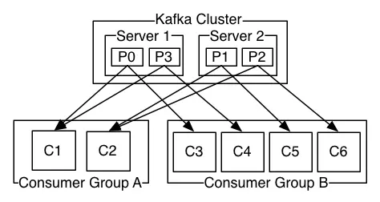
在一个消费者组内，一个分区只能被一个消费者实例消费。这种设计保证了分区内消息消费的顺序性，因为一个分区的消息只能由一个消费者按顺序处理。比如，一个主题有 3 个分区，一个消费者组中有 3 个消费者，那么这 3 个消费者会分别对应一个分区进行消息消费。
如果两个消费者负责同一个分区，那么就意味着两个消费者同时读取分区的消息，由于消费者自己可以控制读取消息的偏移量，就有可能C1才读到2，而C1读到1，C1还没处理完，C2已经读到3了，则会造成很多浪费，因为这就相当于多线程读取同一个消息，会造成消息处理的重复，且不能保证消息的顺序。
如果消费者数量 > 分区数，多余消费者闲置，比如主题 orders 有 3 个分区（P0、P1、P2），消费者组 group-1 有 3 个消费者（C1、C2、C3）：
P0 → C1
P1 → C2
P2 → C3
如果消费者组扩容到 4 个消费者，第 4 个消费者（C4）将无法分配到分区，处于空闲状态。
限流算法有哪些？
限流是当高并发或者瞬时高并发时，为了保证系统的稳定性、可用性，对超出服务处理能力之外的请求进行拦截，对访问服务的流量进行限制。
常见的限流算法有四种：固定窗口限流算法、滑动窗口限流算法、漏桶限流算法和令牌桶限流算法。
- 固定窗口限流算法实现简单，容易理解，但是流量曲线可能不够平滑，有“突刺现象”，在窗口切换时可能会产生两倍于阈值流量的请求。
- 滑动窗口限流算法是对固定窗口限流算法的改进，有效解决了窗口切换时可能会产生两倍于阈值流量请求的问题。
- 漏桶限流算法能够对流量起到整流的作用，让随机不稳定的流量以固定的速率流出，但是不能解决流量突发的问题。
- 令牌桶算法作为漏斗算法的一种改进，除了能够起到平滑流量的作用，还允许一定程度的流量突发。
固定窗口限流算法
固定窗口限流算法就是对一段固定时间窗口内的请求进行计数，如果请求数超过了阈值，则舍弃该请求；如果没有达到设定的阈值，则接受该请求，且计数加1。当时间窗口结束时，重置计数器为0。
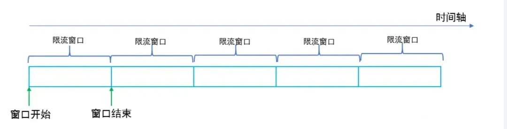
固定窗口限流优点是实现简单，但是会有“流量吐刺”的问题，假设窗口大小为1s，限流大小为100，然后恰好在某个窗口的第999ms来了100个请求，窗口前期没有请求，所以这100个请求都会通过。
再恰好，下一个窗口的第1ms有来了100个请求，也全部通过了，那也就是在2ms之内通过了200个请求，而我们设定的阈值是100，通过的请求达到了阈值的两倍，这样可能会给系统造成巨大的负载压力。
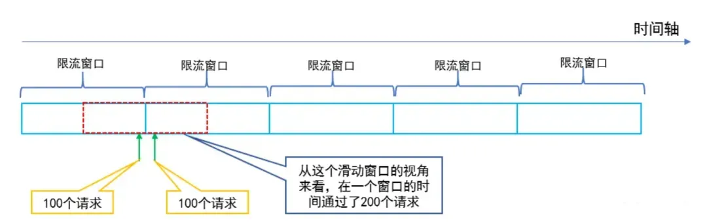
滑动窗口限流算法
改进固定窗口缺陷的方法是采用滑动窗口限流算法，滑动窗口就是将限流窗口内部切分成一些更小的时间片，然后在时间轴上滑动，每次滑动，滑过一个小时间片，就形成一个新的限流窗口，即滑动窗口。然后在这个滑动窗口内执行固定窗口算法即可。
滑动窗口可以避免固定窗口出现的放过两倍请求的问题，因为一个短时间内出现的所有请求必然在一个滑动窗口内，所以一定会被滑动窗口限流。
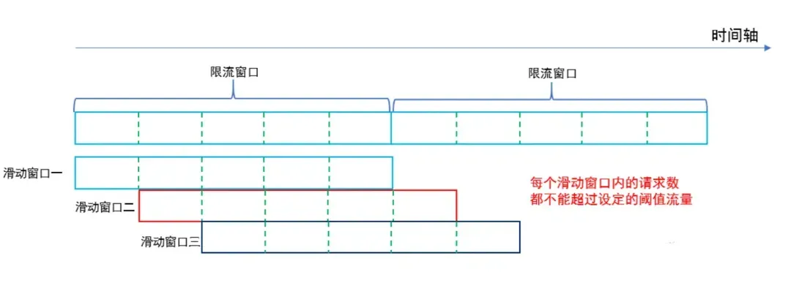
漏桶限流算法
漏桶限流算法是模拟水流过一个有漏洞的桶进而限流的思路，如图。
水龙头的水先流入漏桶，再通过漏桶底部的孔流出。如果流入的水量太大，底部的孔来不及流出，就会导致水桶太满溢出去。从系统的角度来看，我们不知道什么时候会有请求来，也不知道请求会以多大的速率来，这就给系统的安全性埋下了隐患。但是如果加了一层漏斗算法限流之后，就能够保证请求以恒定的速率流出。
在系统看来，请求永远是以平滑的传输速率过来，从而起到了保护系统的作用。使用漏桶限流算法，缺点有两个：
- 即使系统资源很空闲，多个请求同时到达时，漏桶也是慢慢地一个接一个地去处理请求，这其实并不符合人们的期望，因为这样就是在浪费计算资源。
- 不能解决流量突发的问题，假设漏斗速率是2个/秒，然后突然来了10个请求，受限于漏斗的容量，只有5个请求被接受，另外5个被拒绝。你可能会说，漏斗速率是2个/秒，然后瞬间接受了5个请求，这不就解决了流量突发的问题吗？不，这5个请求只是被接受了，但是没有马上被处理，处理的速度仍然是我们设定的2个/秒，所以没有解决流量突发的问题
令牌桶限流算法
令牌桶是另一种桶限流算法，模拟一个特定大小的桶，然后向桶中以特定的速度放入令牌（token），请求到达后，必须从桶中取出一个令牌才能继续处理。如果桶中已经没有令牌了，那么当前请求就被限流。如果桶中的令牌放满了，令牌桶也会溢出。
放令牌的动作是持续不断进行的，如果桶中令牌数达到上限，则丢弃令牌，因此桶中可能一直持有大量的可用令牌。此时请求进来可以直接拿到令牌执行。比如设置 qps 为 100，那么限流器初始化完成 1 秒后，桶中就已经有 100 个令牌了，如果此前还没有请求过来，这时突然来了 100 个请求，该限流器可以抵挡瞬时的 100 个请求。
由此可见，只有桶中没有令牌时，请求才会进行等待，最终表现的效果即为以一定的速率执行。
令牌桶的示意图如下：
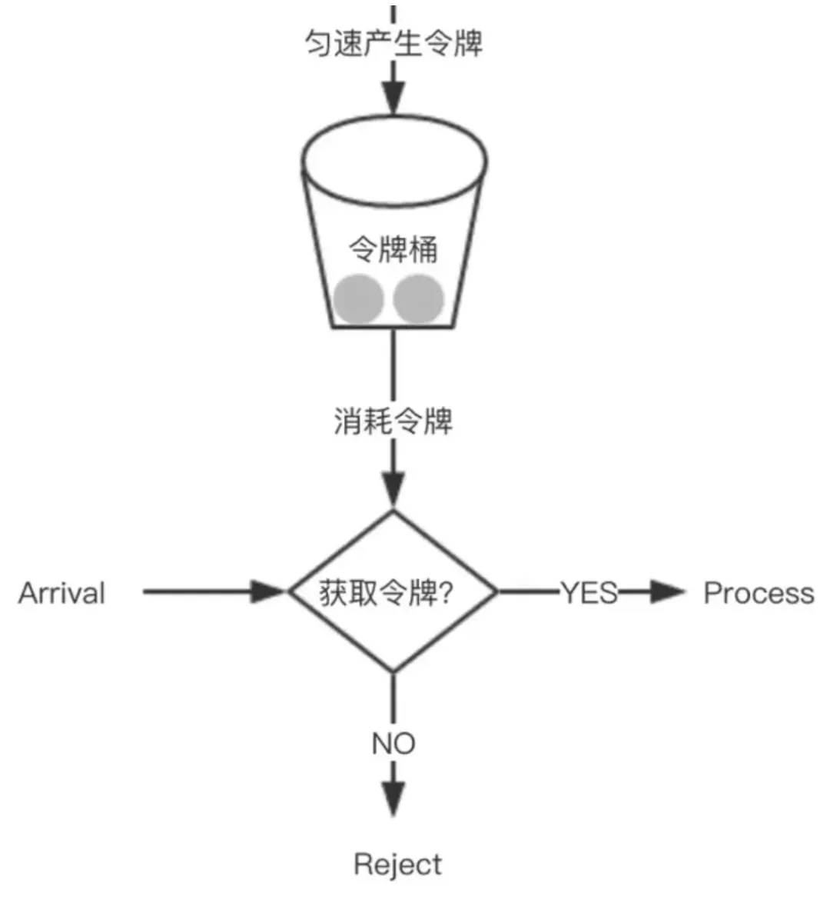
令牌桶限流算法综合效果比较好，能在最大程度利用系统资源处理请求的基础上，实现限流的目标，建议通常场景中优先使用该算法。
谈谈对rocketmq的理解？
消息队列主要有三大作用：
- 解耦：可以在多个系统之间进行解耦，将原本通过网络之间的调用的方式改为使用MQ进行消息的异步通讯，只要该操作不是需要同步的，就可以改为使用MQ进行不同系统之间的联系，这样项目之间不会存在耦合，系统之间不会产生太大的影响，就算一个系统挂了，也只是消息挤压在MQ里面没人进行消费而已，不会对其他的系统产生影响。
- 异步：加入一个操作设计到好几个步骤，这些步骤之间不需要同步完成，比如客户去创建了一个订单，还要去客户轨迹系统添加一条轨迹、去库存系统更新库存、去客户系统修改客户的状态等等。这样如果这个系统都直接进行调用，那么将会产生大量的时间，这样对于客户是无法接收的；并且像添加客户轨迹这种操作是不需要去同步操作的，如果使用MQ将客户创建订单时，将后面的轨迹、库存、状态等信息的更新全都放到MQ里面然后去异步操作，这样就可加快系统的访问速度，提供更好的客户体验。
- 削峰：一个系统访问流量有高峰时期，也有低峰时期，比如说，中午整点有一个抢购活动等等。比如系统平时流量并不高，一秒钟只有100多个并发请求，系统处理没有任何压力，一切风平浪静，到了某个抢购活动时间，系统并发访问了剧增，比如达到了每秒5000个并发请求，而我们的系统每秒只能处理2000个请求，那么由于流量太大，我们的系统、数据库可能就会崩溃。这时如果使用MQ进行流量削峰，将用户的大量消息直接放到MQ里面，然后我们的系统去按自己的最大消费能力去消费这些消息，就可以保证系统的稳定，只是可能要跟进业务逻辑，给用户返回特定页面或者稍后通过其他方式通知其结果
10. 为什么使用rocketmq？
消息队列的三大作用：
- 解耦：可以在多个系统之间进行解耦，将原本通过网络之间的调用的方式改为使用MQ进行消息的异步通讯，只要该操作不是需要同步的，就可以改为使用MQ进行不同系统之间的联系，这样项目之间不会存在耦合，系统之间不会产生太大的影响，就算一个系统挂了，也只是消息挤压在MQ里面没人进行消费而已，不会对其他的系统产生影响。
- 异步：加入一个操作设计到好几个步骤，这些步骤之间不需要同步完成，比如客户去创建了一个订单，还要去客户轨迹系统添加一条轨迹、去库存系统更新库存、去客户系统修改客户的状态等等。这样如果这个系统都直接进行调用，那么将会产生大量的时间，这样对于客户是无法接收的；并且像添加客户轨迹这种操作是不需要去同步操作的，如果使用MQ将客户创建订单时，将后面的轨迹、库存、状态等信息的更新全都放到MQ里面然后去异步操作，这样就可加快系统的访问速度，提供更好的客户体验。
- 削峰：一个系统访问流量有高峰时期，也有低峰时期，比如说，中午整点有一个抢购活动等等。比如系统平时流量并不高，一秒钟只有100多个并发请求，系统处理没有任何压力，一切风平浪静，到了某个抢购活动时间，系统并发访问了剧增，比如达到了每秒5000个并发请求，而我们的系统每秒只能处理2000个请求，那么由于流量太大，我们的系统、数据库可能就会崩溃。这时如果使用MQ进行流量削峰，将用户的大量消息直接放到MQ里面，然后我们的系统去按自己的最大消费能力去消费这些消息，就可以保证系统的稳定，只是可能要跟进业务逻辑，给用户返回特定页面或者稍后通过其他方式通知其结果
kafka副本了解吗，聊聊ISR
在Kafka中是有主题概念的，而每个主题又进一步划分成若干个分区。副本的概念实际上是在分区层级下定义的，每个分区配置有若干个副本。所谓副本（Replica），本质就是一个只能追加写消息的提交日志。根据Kafka副本机制的定义，同一个分区下的所有副本保存有相同的消息序列，这些副本分散保存在不同的Broker上，从而能够对抗部分Broker宕机带来的数据不可用。
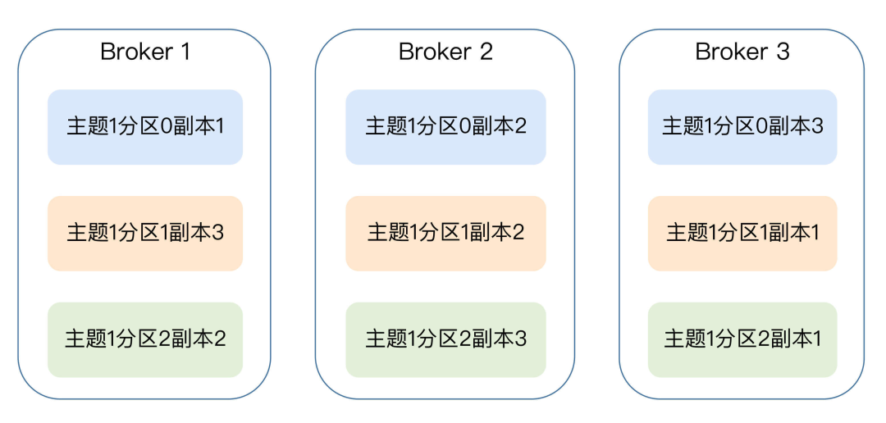
在kafka中采用基于领导者（Leader-based）的副本机制来确保副本中所有的数据的一致性。基于领导者的副本机制的工作原理如下图所示：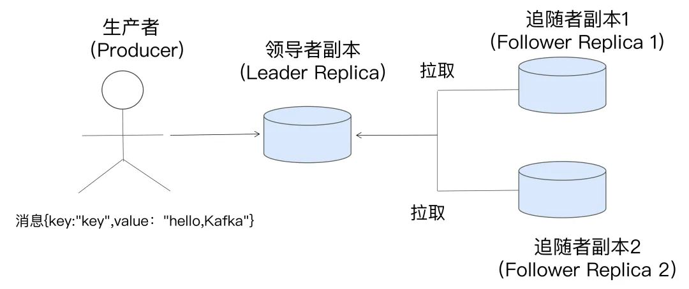
第一，在Kafka中，副本分成两类：领导者副本（Leader Replica）和追随者副本（Follower Replica）。每个分区在创建时都要选举一个副本，称为领导者副本，其余的副本自动称为追随者副本。第二，Kafka的副本机制比其他分布式系统要更严格一些。在Kafka中，追随者副本是不对外提供服务的。这就是说，任何一个追随者副本都不能响应消费者和生产者的读写请求。所有的请求都必须由领导者副本来处理，或者说，所有的读写请求都必须发往领导者副本所在的Broker，由该Broker负责处理。追随者副本不处理客户端请求，它唯一的任务就是从领导者副本异步拉取消息，并写入到自己的提交日志中，从而实现与领导者副本的同步。
第三，当领导者副本挂掉了，或者说领导者副本所在的Broker宕机时，Kafka依托于ZooKeeper提供的监控功能能够实时感知到，并立即开启新一轮的领导者选举，从追随者副本中选一个作为新的领导者。老Leader副本重启回来后，只能作为追随者副本加入到集群中。
一定要特别注意上面的第二点，即追随者副本是不对外提供服务的。还记得刚刚我们谈到副本机制的好处时，说过Kafka没能提供读操作横向扩展以及改善局部性吗？具体的原因就在于此。
对于客户端用户而言，Kafka的追随者副本没有任何作用，它既不能像MySQL那样帮助领导者副本“扛读”，也不能实现将某些副本放到离客户端近的地方来改善数据局部性。
既然如此，Kafka为什么要这样设计呢？其实这种副本机制有两个方面的好处。
- 方便实现“Read-your-writes”：所谓Read-your-writes，顾名思义就是，当你使用生产者API向Kafka成功写入消息后，马上使用消费者API去读取刚才生产的消息。举个例子，比如你平时发微博时，你发完一条微博，肯定是希望能立即看到的，这就是典型的Read-your-writes场景。如果允许追随者副本对外提供服务，由于副本同步是异步的，因此有可能出现追随者副本还没有从领导者副本那里拉取到最新的消息，从而使得客户端看不到最新写入的消息。
- 方便实现单调读（Monotonic Reads）：什么是单调读呢？就是对于一个消费者用户而言，在多次消费消息时，它不会看到某条消息一会儿存在一会儿不存在。如果允许追随者副本提供读服务，那么假设当前有2个追随者副本F1和F2，它们异步地拉取领导者副本数据。倘若F1拉取了Leader的最新消息而F2还未及时拉取，那么，此时如果有一个消费者先从F1读取消息之后又从F2拉取消息，它可能会看到这样的现象：第一次消费时看到的最新消息在第二次消费时不见了，这就不是单调读一致性。但是，如果所有的读请求都是由Leader来处理，那么Kafka就很容易实现单调读一致性。
在kafka中，追随者副本不提供服务，只是定期地异步拉取领导者副本中的数据而已。既然是异步的，就存在着不可能与Leader实时同步的风险。在探讨如何正确应对这种风险之前，我们必须要精确地知道同步的含义是什么。或者说，Kafka要明确地告诉我们，追随者副本到底在什么条件下才算与Leader同步。
基于这个想法，Kafka引入了In-sync Replicas，也就是所谓的ISR副本集合。ISR中的副本都是与Leader同步的副本，相反，不在ISR中的追随者副本就被认为是与Leader不同步的。
那么，到底什么副本能够进入到ISR中呢？
我们首先要明确的是，Leader副本天然就在ISR中。也就是说，ISR不只是追随者副本集合，它必然包括Leader副本。甚至在某些情况下，ISR只有Leader这一个副本。
另外，能够进入到ISR的追随者副本要满足一定的条件。
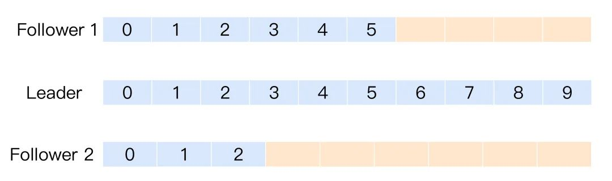
图中有3个副本：1个领导者副本和2个追随者副本。Leader副本当前写入了10条消息，Follower1副本同步了其中的6条消息，而Follower2副本只同步了其中的3条消息。那么问题来了，对于这2个追随者副本，你觉得哪个追随者副本与Leader不同步？答案是，要根据具体情况来定。换成英文，就是那句著名的“It depends”。看上去好像Follower2的消息数比Leader少了很多，它是最有可能与Leader不同步的。的确是这样的，但仅仅是可能。
事实上，这张图中的2个Follower副本都有可能与Leader不同步，但也都有可能与Leader同步。也就是说，Kafka判断Follower是否与Leader同步的标准，不是看相差的消息数，而是另有“玄机”。
这个标准就是Broker端参数replica.lag.time.max.ms参数值。这个参数的含义是Follower副本能够落后Leader副本的最长时间间隔，当前默认值是10秒。这就是说，只要一个Follower副本落后Leader副本的时间不连续超过10秒，那么Kafka就认为该Follower副本与Leader是同步的，即使此时Follower副本中保存的消息明显少于Leader副本中的消息。
我们都知道，Follower副本唯一的工作就是不断地从Leader副本拉取消息，然后写入到自己的提交日志中。如果这个同步过程的速度持续慢于Leader副本的消息写入速度，那么在replica.lag.time.max.ms时间后，此Follower副本就会被认为是与Leader副本不同步的，因此不能再放入ISR中。此时，Kafka会自动收缩ISR集合，将该副本“踢出”ISR。
值得注意的是，倘若该副本后面慢慢地追上了Leader的进度，那么它是能够重新被加回ISR的。这也表明，ISR是一个动态调整的集合，而非静态不变的。
Unclean领导者选举（Unclean Leader Election）
既然ISR是可以动态调整的，那么自然就可以出现这样的情形：ISR为空。
因为Leader副本天然就在ISR中，如果ISR为空了，就说明Leader副本也“挂掉”了，Kafka需要重新选举一个新的Leader。可是ISR是空，此时该怎么选举新Leader呢？
Kafka把所有不在ISR中的存活副本都称为非同步副本。通常来说，非同步副本落后Leader太多，因此，如果选择这些副本作为新Leader，就可能出现数据的丢失。
毕竟，这些副本中保存的消息远远落后于老Leader中的消息。在Kafka中，选举这种副本的过程称为Unclean领导者选举。Broker端参数unclean.leader.election.enable控制是否允许Unclean领导者选举。
开启Unclean领导者选举可能会造成数据丢失，但好处是，它使得分区Leader副本一直存在，不至于停止对外提供服务，因此提升了高可用性。反之，禁止Unclean领导者选举的好处在于维护了数据的一致性，避免了消息丢失，但牺牲了高可用性。
Kafka 和 RocketMQ 的区别是什么？
- 架构设计：
- Kafka：分布式发布-订阅系统，由生产者、消费者、Broker、Topic、Partition 和 ZooKeeper 构成。
- RocketMQ：由 NameServer、Broker、生产者和消费者构成，支持多种消息模式。
- 高可用设计：
- Kafka：通过副本机制、领导者和追随者模式、控制器和 ZooKeeper 协调实现高可用。
- RocketMQ：采用主从架构，NameServer 无状态设计，支持同步和异步复制。
- 延迟消息：Kafka 不支持，RocketMQ 提供多个预定义级别延迟。
- 集群扩展：
- Kafka：通过增加 Broker 扩展，依赖 Zookeeper，分区重新平衡负载。
- RocketMQ：区分 Broker 和 NameServer 角色，扩展时可增加 Broker 和 NameServer。
- 使用场景：
- RocketMQ：适合事务消息、顺序消息、广播消息、定时延迟消息等场景，如电商、金融等对可靠性要求高的行业。
- Kafka：适用于日志聚合、流式处理、事件驱动架构、数据集成和分布式系统冗余备份等场景。
Kafka 为什么性能高？
1）页缓存技术
Kafka是基于操作系统的页缓存来实现写入的，操作系统本身有一层缓存，叫做page cache，是在内存里的缓存，我们也可以称之为 os cache，意思就是操作系统自己管理的缓存。
Kafka在写入磁盘文件的时候，可以直接写入到这个os cache里，也就是仅仅写入到内存中，接下来由操作系统自己决定什么时候把os cache里的数据真的刷入磁盘文件中。这样可以很大提升写性能
2）磁盘顺序写
Kafka写数据的时候，Kafka的消息是不断追加到文件末尾的，而不是在文件的随机位置写入数据，这个特性使Kafka可以充分利用磁盘的顺序读写性能。顺序读写不需要磁盘磁头的寻道时间，避免了随机磁盘寻址的浪费，只需很少的扇区旋转时间，所以速度远快于随机读写。
Kafka中每个分区是一个有序的，不可变的消息序列，新的消息不断追加到Partition的末尾，在Kafka中Partition只是一个逻辑概念，Kafka将Partition划分为多个Segment，每个Segment对应一个物理文件，Kafka对segment文件追加写，这就是顺序读写。
2）零拷贝
在消费数据的时候，实际上要从kafka的磁盘文件里读取某条数据然后发送给下游的消费者。
Kafka在读数据的时候为了避免多余的数据拷贝，使用了零拷贝技术。也就是说直接让os cache里的数据发送到网卡后然后传输给下游的消费者，跳过中间从os cache拷贝到kafka 进程缓存和再拷贝到socket缓存中的两次缓存，同时也减少了上下文切换。
在Linux Kernel2.2之后出现了一种叫做“零拷贝（zero-copy）”系统调用机制，就是跳过“用户缓冲区”的拷贝，建立一个磁盘空间和内存的直接映射，数据不再复制到“用户缓冲区”。
Kafka 使用到了 mmap+write（持久化数据） 和 sendfile（发送数据） 的方式来实现零拷贝。分别对应 Java 的 MappedByteBuffer 和 FileChannel.transferTo。
3）分区并发
kafka中的topic中的内容可以分在多个分区（partition）存储，每个partition又分为多个段segment，所以每次操作都是针对一小部分做操作，很轻便，并且增加并行操作的能力
4）批量发送
Kafka允许进行批量发送消息，Productor发送消息的时候，可以将消息缓存在本地，等到了固定条件发送到kafka，可减少IO延迟 （1）：等消息条数到固定条数 （2）：一段时间发送一次
5）数据压缩
Kafka还支持对消息集合进行压缩，Producer可以通过GZIP或Snappy格式对消息集合进行压缩，压缩的好处就是减少传输的数据量，减轻对网络传输的压力。
批量发送和数据压缩一起使用，单条做数据压缩的话，效果不太明显。消息发送时默认不会压缩，可使用compression.type来指定压缩方式，可选的值为snappy、gzip和lz4
1. 项目问题：rabbitmq进行了异步解耦，说说看？
回答：用作消息通知类似的
面试官：那你没必要用消息队列，异步任务就行了，感觉是为了学做的这个需求，感觉你喜欢把简单的东西复杂化（心凉一半）
小林补充
可以说一下为什么要用到mq，比如同样是挂了的情况，消息队列有什么异常处理机制，确保消息不丢失这方面提到，当然也是要看你的业务是否需要确保任务不丢失。
6. MQ在大型系统中的几种典型使用场景？
- 解耦：可以在多个系统之间进行解耦，将原本通过网络之间的调用的方式改为使用MQ进行消息的异步通讯，只要该操作不是需要同步的，就可以改为使用MQ进行不同系统之间的联系，这样项目之间不会存在耦合，系统之间不会产生太大的影响，就算一个系统挂了，也只是消息挤压在MQ里面没人进行消费而已，不会对其他的系统产生影响。
- 异步：加入一个操作设计到好几个步骤，这些步骤之间不需要同步完成，比如客户去创建了一个订单，还要去客户轨迹系统添加一条轨迹、去库存系统更新库存、去客户系统修改客户的状态等等。这样如果这个系统都直接进行调用，那么将会产生大量的时间，这样对于客户是无法接收的；并且像添加客户轨迹这种操作是不需要去同步操作的，如果使用MQ将客户创建订单时，将后面的轨迹、库存、状态等信息的更新全都放到MQ里面然后去异步操作，这样就可加快系统的访问速度，提供更好的客户体验。
- 削峰：一个系统访问流量有高峰时期，也有低峰时期，比如说，中午整点有一个抢购活动等等。比如系统平时流量并不高，一秒钟只有100多个并发请求，系统处理没有任何压力，一切风平浪静，到了某个抢购活动时间，系统并发访问了剧增，比如达到了每秒5000个并发请求，而我们的系统每秒只能处理2000个请求，那么由于流量太大，我们的系统、数据库可能就会崩溃。这时如果使用MQ进行流量削峰，将用户的大量消息直接放到MQ里面，然后我们的系统去按自己的最大消费能力去消费这些消息，就可以保证系统的稳定，只是可能要跟进业务逻辑，给用户返回特定页面或者稍后通过其他方式通知其结果
7. 解释push/pull两种消息推送模式的差异？
push 模式消息生产者主动将消息推送给消费者，消费者被动接收消息，push 模式的优点是时性强，适合对响应速度要求高的场景，消费者无需主动轮询，减少无效请求，缺点是长连接维护成本高，网络波动时重连逻辑复杂。
push 模式常见的应用场景比如手机 APP（如微信、新闻客户端）通过 Push 模式将新消息、新闻推送给用户，无需用户主动打开 APP，以及监控系统发现服务器异常时，立即通过 Push 模式向运维人员发送短信或邮件告警。
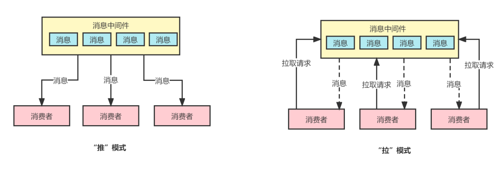
pull模式消费者主动从消息中间件（如队列、主题）拉取消息，生产者仅负责发送消息到中间存储，优点是消费者可自主控制拉取节奏，适配不同负载（如流量削峰），还可以中间件缓冲消息，解耦生产者与消费者，系统稳定性更高。缺点是实时性依赖拉取频率（如轮询间隔过长会导致消息延迟），还有若拉取不及时，可能导致中间件消息积压。
pull 模式常见的应用场景日志收集系统从各服务器拉取日志数据，存入中间件后由分析组件按需拉取处理，以及订单系统将订单数据存入消息队列，支付模块、物流模块主动拉取订单信息进行处理，避免高并发时的流量冲击。
8. 什么时候适合用pull模式？为什么？
基于 push 模式消费消息，实时性好，只要消息进入消息中间件就可以即时被消费者感知并进行消费；缺点在于“推”模式需要消息中间件进行额外的计算和消费者的维护工作，因此可能引起消息中间件服务端的机器CPU负载升高；
而 pull 模式消费消息，消费者能够自主控制拉取的频率，拉取的数量，因此对消息中间件的机器而言，负载较低；但是“拉”模式由于是定时发起的消息拉取请求，因此实时性较弱。而且“拉”模式下还需要消费者自行维护消费进度，相比而言“推”模式的消息消费方式则不需要客户端主动维护消费进度（广播消费模式除外）。
因此对推（push）/拉（pull）模式的使用建议如下：
- （1）如果追求消息消费的实时性，则推荐使用“推”模式消费消息，但是要注意尽量提高消息中间件服务器的配置，并添加必要的监控以感知服务器的性能指标变化；
- （2）如果想要灵活控制消费频率，消息拉取数量，则推荐使用“拉”模式消费消息。
RocketMQ延时消息的底层原理
总体的原理示意图，如下所示：
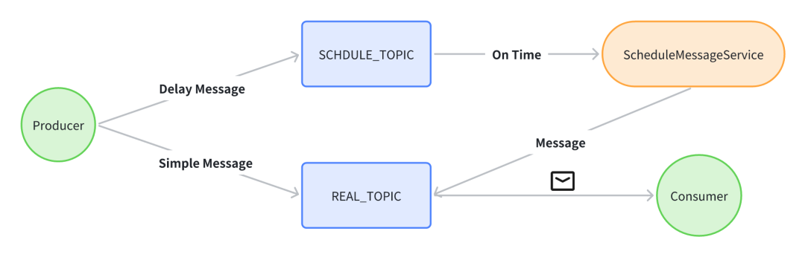
broker 在接收到延时消息的时候，会将延时消息存入到延时Topic的队列中，然后ScheduleMessageService中，每个 queue 对应的定时任务会不停地被执行，检查 queue 中哪些消息已到设定时间，然后转发到消息的原始Topic，这些消息就会被各自的 producer 消费了。RocketMQ怎么保证消息有序性？
RocketMQ在默认的情况下消息发送会采取Round Robin轮询方式把消息发送到不同的queue(分区队列)；RocketMQ在消费消息的时候从多个queue上拉取消息，这种情况发送和消费是不能保证顺序。
但是如果控制发送的顺序消息只依次发送到同一个queue中，消费的时候只从这个queue上依次拉取，则就保证了顺序。RocketMQ能严格保证消息的有序性，将顺序消息分为全局顺序消息与分区顺序消息。
- 全局顺序：对于指定的一个 Topic，所有消息按照严格的先入先出（FIFO）的顺序进行发布和消费。
- 分区顺序：对于指定的一个 Topic，所有消息根据hashKey进行区块分区。同一个分区内的消息按照严格的 FIFO 顺序进行发布和消费。
RocketMQ实现消息的有序性，需要从三个方面一起保证消息的有序性：
- 生产者生产顺序消息：多线程发送的消息无法保证有序性，因此，需要业务方在发送时，针对同一个业务编号(如同一笔订单)的消息需要保证在一个线程内顺序发送，在上一个消息发送成功后，在进行下一个消息的发送。对应到mq中，消息发送方法就得使用同步发送，异步发送无法保证顺序性
- Broker保存顺序消息：mq的topic下会存在多个queue，要保证消息的顺序存储，同一个业务编号的消息需要被发送到一个queue中。对应到mq中，需要使用MessageQueueSelector来选择要发送的queue，即对业务编号进行hash，然后根据队列数量对hash值取余，将消息发送到一个queue中
- 消费者顺序消费消息：RocketMQ消费端默认消费逻辑：1、负载均衡，指定消费者负责某些队列；2、当前消费者开启多个线程开始同时消费这个队列，远程拉取消息。从上面消费逻辑可以看到，如果要保证消息有序消费，就要解决这两个问题，需要用到锁来保证一个队列同时只有一个消费者线程进行消费，在broker端，rocketmq是通过锁定MessageQueue的方式，来保证同一时刻，只能有一个消费者进行消费，而在消费端，rocketmq是通过synchronized锁定ConsumeRequest中的run方法，来保证一个消费者同时只能有一个线程进行消费
RocketMQ怎么保证消息不被重复消费
在业务逻辑中实现幂等性，确保即使消息被重复消费，也不会影响业务状态。
例如，对于支付或转账类操作，可以使用唯一订单号或事务ID作为幂等性的标识符，确保同样的操作只会被执行一次。
RocketMQ和Kafka的区别是什么？如何做技术选型？
Kafka的优缺点：
- 优点：首先，Kafka的最大优势就在于它的高吞吐量，在普通机器4CPU8G的配置下，一台机器可以抗住十几万的QPS，这一点还是相当优越的。Kafka支持集群部署，如果部分机器宕机不可用，则不影响Kafka的正常使用。
- 缺点：Kafka有可能会造成数据丢失，因为它在收到消息的时候，并不是直接写到物理磁盘的，而是先写入到磁盘缓冲区里面的。Kafka功能比较的单一 主要的就是支持收发消息，高级功能基本没有，就会造成适用场景受限。
RocketMQ是阿里巴巴开源的消息中间件，优缺点：
- 优点：支持功能比较多，比如延迟队列、消息事务等等，吞吐量也高，单机吞吐量达到 10 万级，支持大规模集群部署，线性扩展方便，Java语言开发，满足了国内绝大部分公司技术栈
- 缺点：性能相比 kafka 是弱一点，因为 kafka 用到了 sendfile 的零拷贝技术，而 RocketMQ 主要是用 mmap+write 来实现零拷贝。
该怎么选择呢？
- 如果我们业务只是收发消息这种单一类型的需求，而且可以允许小部分数据丢失的可能性，但是又要求极高的吞吐量和高性能的话，就直接选Kafka就行了，就好比我们公司想要收集和传输用户行为日志以及其他相关日志的处理，就选用的Kafka中间件。
- 如果公司的需要通过 mq 来实现一些业务需求，比如延迟队列、消息事务等，公司技术栈主要是Java语言的话，就直接一步到位选择RocketMQ，这样会省很多事情。
使用消息中间件降低消息持久化的压力是怎么做的，为什么可以降低？
读者答：在突发大量消息的情况下可以做到流量削峰，在消费者消费能力达不到生产者产生消息的速度时也能够正常运行。
怎么解决消息队列上的消息堆压？
读者答：
- （1）自身场景下，消息堆压是暂时的，消息堆压只是突发状况，就算不额外处理，随着时间流逝也可消费完毕。
- （2）假如存在持续性消息堆压，可以考虑临时增加消费者的数量，提升消费者的消费能力。
小林补充：
如果是线上突发问题，要临时扩容，增加消费端的数量，与此同时，降级一些非核心的业务。通过扩容和降级承担流量，这是为了表明你对应急问题的处理能力。其次，才是排查解决异常问题，如通过监控，日志等手段分析是否消费端的业务逻辑代码出现了问题，优化消费端的业务处理逻辑。
Kafka和RocketMQ的区别？
Kafka的优缺点：
- 优点：首先，Kafka的最大优势就在于它的高吞吐量，在普通机器4CPU8G的配置下，一台机器可以抗住十几万的QPS，这一点还是相当优越的。Kafka支持集群部署，如果部分机器宕机不可用，则不影响Kafka的正常使用。
- 缺点：Kafka有可能会造成数据丢失，因为它在收到消息的时候，并不是直接写到物理磁盘的，而是先写入到磁盘缓冲区里面的。Kafka功能比较的单一主要的就是支持收发消息，高级功能基本没有，就会造成适用场景受限。
RocketMQ是阿里巴巴开源的消息中间件，优缺点：
- 优点：支持功能比较多，比如延迟队列、消息事务等等，吞吐量也高，单机吞吐量达到 10 万级，支持大规模集群部署，线性扩展方便，Java语言开发，满足了国内绝大部分公司技术栈
- 缺点：性能相比 kafka 是弱一点，因为 kafka 用到了 sendfile 的零拷贝技术，而 RocketMQ 主要是用 mmap+write 来实现零拷贝。
该怎么选择呢？
- 如果我们业务只是收发消息这种单一类型的需求，而且可以允许小部分数据丢失的可能性，但是又要求极高的吞吐量和高性能的话，就直接选Kafka就行了，就好比我们公司想要收集和传输用户行为日志以及其他相关日志的处理，就选用的Kafka中间件。
- 如果公司的需要通过 mq 来实现一些业务需求，比如延迟队列、消息事务等，公司技术栈主要是Java语言的话，就直接一步到位选择RocketMQ，这样会省很多事情。
5. Kafka你一般选几个消费者为什么？
核心原则是消费者数量 ≤ 分区数量。****Kafka 的并行度由分区数决定的，因为每个分区只能被同一个消费者组（Consumer Group）中的一个消费者消费。
比如，如果 Topic 有 6 个分区，消费者组最多可以启动 6 个消费者（1:1 绑定），如果启动 8 个消费者，其中 2 个会闲置（无分区可消费）。
如果要确定消费者数量，可以根据吞吐量需求来计算，公式如下：
消费者数量 = min(分区数, 预期吞吐量 / 单个消费者处理能力)
比如，Topic 有 12 个分区，单个消费者每秒处理 1000 条消息，生产者写入速率 8000 条/秒，至少需要 8000 / 1000 = 8 个消费者（不超过 12）。
所以，我们通常根据分区数量和吞吐需求决定消费者数量。例如，一个 12 分区的 Topic，如果单消费者处理能力为 1000 QPS，而生产者写入速率为 8000 QPS，则会部署 8 个消费者（不超过分区数），同时会预留 20% 分区余量应对突发流量。
6. Kafka怎么做到最多消费一次？
在 Kafka 中要实现 “最多消费一次”（At Most Once）的语义，也就是确保每条消息最多被消费一次，即便出现异常也不会重复消费。
可从生产者、消费者以及 Kafka 集群配置等方面来操作：
- 生产端：生产者方面主要是保证消息不会重复发送，因为重复发送会造成消费者重复消费，可以采用幂等性生产者，幂等性生产者能够保证在消息发送失败并重试时，相同的消息不会被重复写入 Kafka。
- 消费端：在消费者端达成 “最多消费一次” 语义，核心在于保证消费消息和提交偏移量这两个操作具有原子性，也就是要保证消息在被消费之后才会提交偏移量。要是在消费消息时出现异常，就不提交偏移量，如此一来，下次消费时就不会重复消费该消息，具体实现方式关闭自动提交偏移量功能，在消息消费成功之后手动提交偏移量，在消费消息时捕获可能出现的异常，若出现异常就不提交偏移量。
为什么选择RabbitMQ，kafka了解过吗，使用场景？
Kafka、ActiveMQ、RabbitMQ、RocketMQ来进行不同维度对比。
| 特性 | ActiveMQ | RabbitMQ | RocketMQ | Kafka |
|---|---|---|---|---|
| 单机吞吐量 | 万级 | 万级 | 10 万级 | 10 万级 |
| 时效性 | 毫秒级 | 微秒级 | 毫秒级 | 毫秒级 |
| 可用性 | 高（主从） | 高（主从） | 非常高（分布式） | 非常高（分布式） |
| 消息重复 | 至少一次 | 至少一次 | 至少一次 最多一次 | 至少一次最多一次 |
| 消息顺序性 | 有序 | 有序 | 有序 | 分区有序 |
| 支持主题数 | 千级 | 百万级 | 千级 | 百级，多了性能严重下滑 |
| 消息回溯 | 不支持 | 不支持 | 支持（按时间回溯） | 支持（按offset回溯） |
| 管理界面 | 普通 | 普通 | 完善 | 普通 |
选型的时候，我们需要根据业务场景，结合上述特性来进行选型。
比如你要支持天猫双十一类超大型的秒杀活动，这种一锤子买卖，那管理界面、消息回溯啥的不重要。
我们需要看什么？看吞吐量！所以优先选Kafka和RocketMQ这种更高吞吐的。
比如做一个公司的中台，对外提供能力，那可能会有很多主题接入，这时候主题个数又是很重要的考量，像Kafka这样百级的，就不太符合要求，可以根据情况考虑千级的RocketMQ，甚至百万级的RabbitMQ。
又比如是一个金融类业务，那么重点考虑的就是稳定性、安全性，分布式部署的Kafka和Rocket就更有优势。
特别说一下时效性，RabbitMQ以微秒的时效作为招牌，但实际上毫秒和微秒，在绝大多数情况下，都没有感知的区别，加上网络带来的波动，这一点在生产过程中，反而不会作为重要的考量。
其它的特性，如消息确认、消息回溯，也经常作为考量的场景，管理界面的话试公司而定了，反正我呆过的地方，都不看重这个，毕竟都有自己的运维体系。
如何避免消费端重复消费？
避免消费端重复消费的方法有：
- 给每个消息添加唯一的标识，例如一个全局唯一的 ID。消费端在处理消息时，先检查该消息的 ID 是否已经被处理过。可以使用数据库表、缓存等存储已经处理过的消息 ID，当收到新消息时，查询存储中是否存在该 ID，若存在则直接丢弃，若不存在则处理消息并将 ID 存入存储。
- 让消费端的业务处理具有幂等性，即多次执行相同的操作结果与执行一次相同。例如，对于数据库插入操作，可以使用唯一索引来避免重复插入相同的数据；对于更新操作，确保更新的条件是基于唯一标识而不是其他易变的条件，这样即使多次执行更新，也不会出现数据不一致的情况。
什么情况下会出现重复收到消息？
当消费端与消息队列之间的网络出现故障，如网络中断、延迟过高或数据包丢失等情况，可能导致消息的确认信息未能及时发送到消息队列。消息队列在未收到确认信息时，会认为消息没有被成功消费，从而重新发送消息，导致消费端重复收到消息。
Kafka如何保证消息不丢失？
使用一个消息队列，其实就分为三大块：生产者、中间件、消费者，所以要保证消息就是保证三个环节都不能丢失数据。

- 消息生产阶段：生产者会不会丢消息，取决于生产者对于异常情况的处理是否合理。从消息被生产出来，然后提交给 MQ 的过程中，只要能正常收到 （ MQ 中间件） 的 ack 确认响应，就表示发送成功，所以只要处理好返回值和异常，如果返回异常则进行消息重发，那么这个阶段是不会出现消息丢失的。
- 消息存储阶段：Kafka 在使用时是部署一个集群，生产者在发布消息时，队列中间件通常会写「多个节点」，也就是有多个副本，这样一来，即便其中一个节点挂了，也能保证集群的数据不丢失。
- 消息消费阶段：消费者接收消息+消息处理之后，才回复 ack 的话，那么消息阶段的消息不会丢失。不能收到消息就回 ack，否则可能消息处理中途挂掉了，消息就丢失了。
Kafka如何保证消息不重复消费？
导致重复消费的原因可能出现在生产者，也可能出现在 MQ 或 消费者。
这里说的重复消费问题是指同一个数据被执行了两次，不单单指 MQ 中一条消息被消费了两次，也可能是 MQ 中存在两条一模一样的消费。
- 生产者：生产者可能会重复推送一条数据到 MQ 中，为什么会出现这种情况呢？也许是一个 Controller 接口被重复调用了 2 次，没有做接口幂等性导致的；也可能是推送消息到 MQ 时响应比较慢，生产者的重试机制导致再次推送了一次消息。
- MQ：在消费者消费完一条数据响应 ack 信号消费成功时，MQ 突然挂了，导致 MQ 以为消费者还未消费该条数据，MQ 恢复后再次推送了该条消息，导致了重复消费。
- 消费者：消费者已经消费完了一条消息，正准备但是还未给 MQ 发送 ack 信号时，此时消费者挂了，服务重启后 MQ 以为消费者还没有消费该消息，再次推送了该条消息。
消费者怎么解决重复消费问题呢？这里提供两种方法：
- 状态判断法：消费者消费数据后把消费数据记录在 redis 中，下次消费时先到 redis 中查看是否存在该消息，存在则表示消息已经消费过，直接丢弃消息。
- 业务判断法：通常数据消费后都需要插入到数据库中，使用数据库的唯一性约束防止重复消费。每次消费直接尝试插入数据，如果提示唯一性字段重复，则直接丢失消息。一般都是通过这个业务判断的方法就可以简单高效地避免消息的重复处理了。
RabbitMQ是什么?还有其他什么消息队列？
RabbitMQ是消息队列，RabbitMQ底层架构如下图：
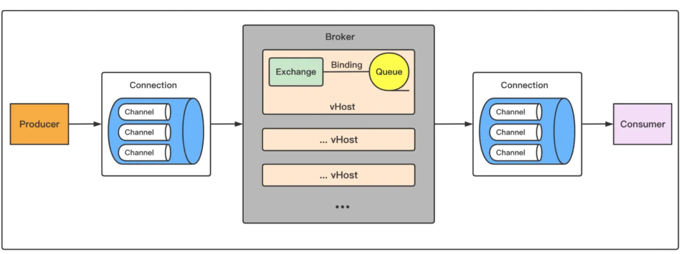
以下是 RabbitMQ 的一些核心架构组件和特性：
- 核心组件：生产者负责发送消息到 RabbitMQ、消费者负责从 RabbitMQ 接收并处理消息、RabbitMQ 本身负责存储和转发消息。
- 交换机：交换机接收来自生产者的消息，并根据 routing key 和绑定规则将消息路由到一个或多个队列。
- 持久化：RabbitMQ 支持消息的持久化，可以将消息保存在磁盘上，以确保在 RabbitMQ 重启后消息不丢失，队列也可以设置为持久化，以保证其结构在重启后不会丢失。
- 确认机制：为了确保消息可靠送达，RabbitMQ 使用确认机制，费者在处理完消息后发送确认给 RabbitMQ，未确认的消息会重新入队。
- 高可用性：RabbitMQ 提供了集群模式，可以将多个 RabbitMQ 实例组成一个集群，以提高可用性和负载均衡。通过镜像队列，可以在多个节点上复制同一队列的内容，以防止单点故障。
除了 RabbitMQ 消息队列，常见的消息队列还有Kafka、ActiveMQ、RocketMQ。
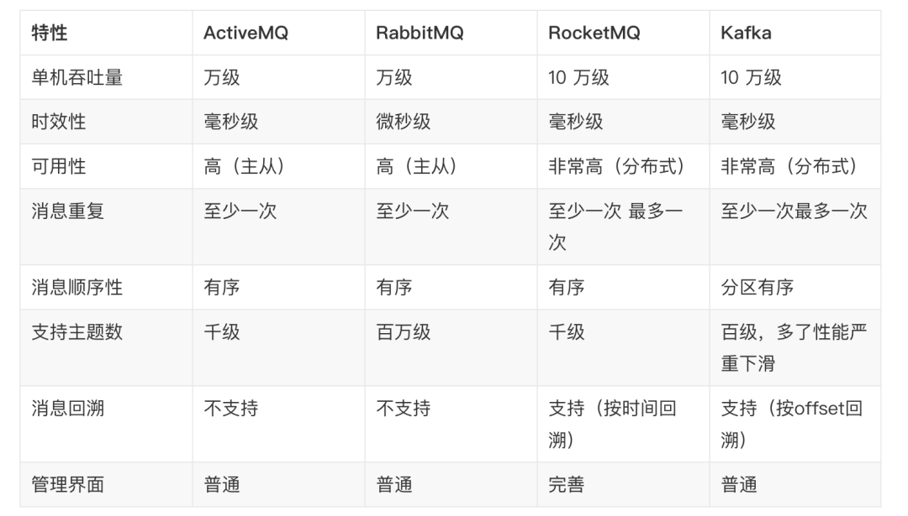
1. kafka的ack机制说一下？
Kafka 有三种主要的 ACK 级别，每种级别都有不同的可靠性保证哦，它们分别是：
-
acks=0：无确认。生产者不会等待任何确认就认为消息已发送成功。这种方式最快，但可靠性最低。如果在发送过程中消息丢失了，生产者不会知道哦。 -
acks=1：单节点确认。生产者会等待消息被领导者副本（leader replica）写入成功后才认为消息已发送成功。这种方式在保证一定可靠性的同时还能保持较高的吞吐量。如果领导者副本失败，可能会丢失消息。 -
acks=all（或acks=-1）： 所有副本确认。生产者会等待消息被所有同步副本（ISR：In-Sync Replicas）写入成功后才认为消息已发送成功。这种方式最可靠，但延迟也最高。即使领导者副本失败，消息也不会丢失哦。
如果要设置 ACK 级别可以在生产者配置中设置 acks 参数来指定 ACK 级别。例如：
Properties props = new Properties();
props.put("bootstrap.servers", "localhost:9092");
props.put("key.serializer", "org.apache.kafka.common.serialization.StringSerializer");
props.put("value.serializer", "org.apache.kafka.common.serialization.StringSerializer");
// 设置ACK级别
props.put("acks", "all"); // 或 "1" 或 "0"
2. kafka怎么防止积压？
防止 Kafka 消息积压可从提升处理能力和优化处理逻辑入手。
- 首先可进行硬件扩容，增加 Broker、分区和消费者数量，需注意消费者数不超过分区数，避免资源闲置，若明确瓶颈在消费者，仅扩容消费者即可。
- 其次实现消费者并行化，通过线程池处理 poll 拉取的消息，合理配置 max.poll.records 参数，搭配异步提交偏移量减少阻塞，提升吞吐量。
- 另外，针对处理逻辑中的瓶颈专项优化，比如数据库操作频繁导致负载高时，可优化 SQL 慢查询、增加从库或缓存减轻读压力，通过分库分表优化写操作；若涉及下游服务调用，需推动下游优化以避免阻塞。
这些方式结合可有效预防消息积压。
kafka的模型介绍一下，kafka是推送还是拉取？
消费者模型
消息由生产者发送到kafka集群后，会被消费者消费。一般来说我们的消费模型有两种：推送模型(psuh)和拉取模型(pull)。
推送模型（push）
- 基于推送模型（push）的消息系统，有消息代理记录消费者的消费状态。
- 消息代理在将消息推送到消费者后，标记这条消息已经消费，但这种方式无法很好地保证消费被处理。
- 如果要保证消息被处理，消息代理发送完消息后，要设置状态为“已发送”，只要收到消费者的确认请求后才更新为“已消费”，这就需要代理中记录所有的消费状态，但显然这种方式不可取。
缺点：
- push模式很难适应消费速率不同的消费者
- 因为消息发送速率是由broker决定的，push模式的目标是尽可能以最快速度传递消息，但是这样很容易造成consumer来不及处理消息，典型的表现就是拒绝服务以及网络拥塞。
拉取模型(pull)
kafka采用拉取模型，由消费者自己记录消费状态，每个消费者互相独立地顺序拉取每个分区的消息。
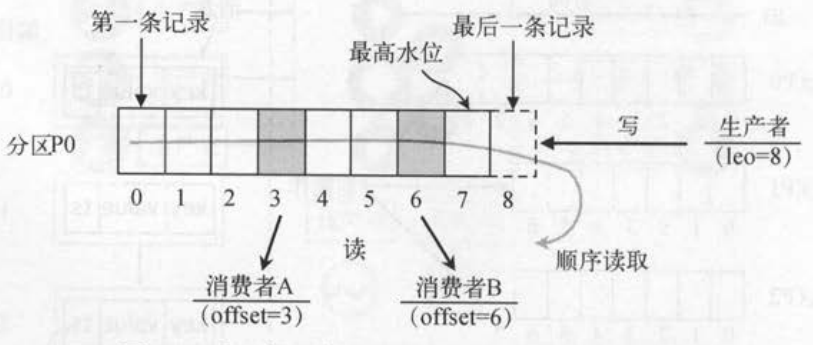
说明：
- 有两个消费者（不同消费者组）拉取同一个主题的消息，消费者A的消费进度是3，消费者B的消费进度是6。
- 消费者拉取的最大上限通过最高水位（watermark）控制，生产者最新写入的消息如果还没有达到备份数量，对消费者是不可见的。
- 这种由消费者控制偏移量的优点是：消费者可以按照任意的顺序消费消息。比如，消费者可以重置到旧的偏移量，重新处理之前已经消费过的消息；或者直接跳到最近的位置，从当前的时刻开始消费。
消费者组
kafka 消费者是以consumer group消费者组的方式工作，由一个或者多个消费者组成一个组，共同消费一个topic。每个分区在同一时间只能由group中的一个消费者读取，但是多个group可以同时消费这个partition。
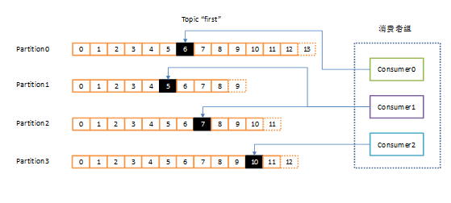
上图中，有一个由三个消费者组成的group，有一个消费者读取主题中的两个分区，另外两个分别读取一个分区。某个消费者读取某个分区，也可以叫做某个消费者是某个分区的拥有者。优点在于：
- 消费者可以通过水平扩展的方式同时读取大量的消息。
- 如果一个消费者失败了，那么其他的group成员会自动负载均衡读取之前失败的消费者读取的分区。
消费方式
kafka 消费者采用 pull（拉）模式从 broker中读取数据。pull 的优点：
- pull 模式可以根据 consumer 的消费能力以适当的速率消费消息
缺点：
- 如果 kafka 没有数据，消费者可能会陷入循环中，一直返回空数据。针对这一点，Kafka 的消费者在消费数据时会传入一个时长参数 timeout，如果当前没有数据可供消费，consumer 会等待一段时间之后再返回，这段时长即为 timeout。
kafka 消息积压怎么办？
导致消息积压突然增加，最粗粒度的原因，只有两种：要么是发送变快了，要么是消费变慢了。
要解决积压的问题，可以通过扩容消费端的实例数来提升总体的消费能力。
- 如果短时间内没有足够的服务器资源进行扩容，没办法的办法是，将系统降级，通过关闭一些不重要的业务，减少发送方发送的数据量，最低限度让系统还能正常运转，服务一些重要业务。
- 如果要扩容消费端，需要注意的是，部署多台消费者实例是不能加快消费原有分区的消息的。最多增加到和partition数量一致，超过的组员只会占用资源，而不起作用，所以扩容消费端的时候，除了增加增加 Consumer 消费者之外，还需要同步对 partition 扩容增加 partition 数量。
用的什么消息队列，消息队列怎么选型的？
项目用的是 RocketMQ 消息队列。选择RocketMQ的原因是：
- 开发语言优势。RocketMQ 使用 Java 语言开发，比起使用 Erlang 开发的 RabbitMQ 来说，有着更容易上手的阅读体验和受众。在遇到 RocketMQ 较为底层的问题时，大部分熟悉 Java 的同学都可以深入阅读其源码，分析、排查问题。
- 社区氛围活跃。RocketMQ 是阿里巴巴开源且内部在大量使用的消息队列，说明 RocketMQ 是的确经得起残酷的生产环境考验的，并且能够针对线上环境复杂的需求场景提供相应的解决方案。
-
特性丰富。根据 RocketMQ 官方文档的列举，其高级特性达到了
12 种，例如顺序消息、事务消息、消息过滤、定时消息等。顺序消息、事务消息、消息过滤、定时消息。RocketMQ 丰富的特性，能够为我们在复杂的业务场景下尽可能多地提供思路及解决方案。
有没有消息积压的问题
导致消息积压突然增加，最粗粒度的原因，只有两种：要么是发送变快了，要么是消费变慢了。
要解决积压的问题，可以通过扩容消费端的实例数来提升总体的消费能力。
如果短时间内没有足够的服务器资源进行扩容，没办法的办法是，将系统降级，通过关闭一些不重要的业务，减少发送方发送的数据量，最低限度让系统还能正常运转，服务一些重要业务。
RocketMQ 消息可靠性怎么保证？
使用一个消息队列，其实就分为三大块：生产者、中间件、消费者，所以要保证消息就是保证三个环节都不能丢失数据。

- 消息生产阶段：生产者会不会丢消息，取决于生产者对于异常情况的处理是否合理。从消息被生产出来，然后提交给 MQ 的过程中，只要能正常收到 （ MQ 中间件） 的 ack 确认响应，就表示发送成功，所以只要处理好返回值和异常，如果返回异常则进行消息重发，那么这个阶段是不会出现消息丢失的。
- 消息存储阶段：RabbitMQ 或 Kafka 这类专业的队列中间件，在使用时是部署一个集群，生产者在发布消息时，队列中间件通常会写「多个节点」，也就是有多个副本，这样一来，即便其中一个节点挂了，也能保证集群的数据不丢失。
- 消息消费阶段：消费者接收消息+消息处理之后，才回复 ack 的话，那么消息阶段的消息不会丢失。不能收到消息就回 ack，否则可能消息处理中途挂掉了，消息就丢失了。
Kafka 和 RocketMQ 消息确认机制有什么不同？
Kafka的消息确认机制有三种：0，1，-1：
- ACK=0：这是最不可靠的模式。生产者在发送消息后不会等待来自服务器的确认。这意味着消息可能会在发送之后丢失，而生产者将无法知道它是否成功到达服务器。
- ACK=1：这是默认模式，也是一种折衷方式。在这种模式下，生产者会在消息发送后等待来自分区领导者（leader）的确认，但不会等待所有副本（replicas）的确认。这意味着只要消息被写入分区领导者，生产者就会收到确认。如果分区领导者成功写入消息，但在同步到所有副本之前宕机，消息可能会丢失。
- ACK=-1：这是最可靠的模式。在这种模式下，生产者会在消息发送后等待所有副本的确认。只有在所有副本都成功写入消息后，生产者才会收到确认。这确保了消息的可靠性，但会导致更长的延迟。
RocketMQ 提供了三种消息发送方式：同步发送、异步发送和单向发送：
- 同步发送：是指消息发送方发出一条消息后，会在收到服务端同步响应之后才发下一条消息的通讯方式。应用场景非常广泛，例如重要通知邮件、报名短信通知、营销短信系统等。
- 异步发送：是指发送方发出一条消息后，不等服务端返回响应，接着发送下一条消息的通讯方式，但是需要实现异步发送回调接口（SendCallback）。消息发送方在发送了一条消息后，不需要等待服务端响应即可发送第二条消息。发送方通过回调接口接收服务端响应，并处理响应结果。适用于链路耗时较长，对响应时间较为敏感的业务场景，例如，视频上传后通知启动转码服务，转码完成后通知推送转码结果等。
- 单向发送：发送方只负责发送消息，不等待服务端返回响应且没有回调函数触发，即只发送请求不等待应答。此方式发送消息的过程耗时非常短，一般在微秒级别。适用于某些耗时非常短，但对可靠性要求并不高的场景，例如日志收集。
Kafka 和 RocketMQ 的 broker 架构有什么区别
- Kafka 的 broker 架构：Kafka 的 broker 架构采用了分布式的设计，每个 Kafka broker 是一个独立的服务实例，负责存储和处理一部分消息数据。Kafka 的 topic 被分区存储在不同的 broker 上，实现了水平扩展和高可用性。
- RocketMQ 的 broker 架构：RocketMQ 的 broker 架构也是分布式的，但是每个 RocketMQ broker 有主从之分，一个主节点和多个从节点组成一个 broker 集群。主节点负责消息的写入和消费者的拉取，从节点负责消息的复制和消费者的负载均衡，提高了消息的可靠性和可用性。
项目中哪些地方使用到了消息队列？
主要是利用了消息队列的异步的作用，将某个任务比较耗时，如发邮件、生成报告、数据处理等，可以使用消息队列实现异步处理，提升系统响应速度。
消息队列三大作用：
- 解耦：可以在多个系统之间进行解耦，将原本通过网络之间的调用的方式改为使用MQ进行消息的异步通讯，只要该操作不是需要同步的，就可以改为使用MQ进行不同系统之间的联系，这样项目之间不会存在耦合，系统之间不会产生太大的影响，就算一个系统挂了，也只是消息挤压在MQ里面没人进行消费而已，不会对其他的系统产生影响。
- 异步：加入一个操作设计到好几个步骤，这些步骤之间不需要同步完成，比如客户去创建了一个订单，还要去客户轨迹系统添加一条轨迹、去库存系统更新库存、去客户系统修改客户的状态等等。这样如果这个系统都直接进行调用，那么将会产生大量的时间，这样对于客户是无法接收的；并且像添加客户轨迹这种操作是不需要去同步操作的，如果使用MQ将客户创建订单时，将后面的轨迹、库存、状态等信息的更新全都放到MQ里面然后去异步操作，这样就可加快系统的访问速度，提供更好的客户体验。
- 削峰：一个系统访问流量有高峰时期，也有低峰时期，比如说，中午整点有一个抢购活动等等。比如系统平时流量并不高，一秒钟只有100多个并发请求，系统处理没有任何压力，一切风平浪静，到了某个抢购活动时间，系统并发访问了剧增，比如达到了每秒5000个并发请求，而我们的系统每秒只能处理2000个请求，那么由于流量太大，我们的系统、数据库可能就会崩溃。这时如果使用MQ进行流量削峰，将用户的大量消息直接放到MQ里面，然后我们的系统去按自己的最大消费能力去消费这些消息，就可以保证系统的稳定，只是可能要跟进业务逻辑，给用户返回特定页面或者稍后通过其他方式通知其结果。
为什么要用rabbitmq? 其他消息队列有什么特点？
Kafka、ActiveMQ、RabbitMQ、RocketMQ来进行不同维度对比。
| 特性 | ActiveMQ | RabbitMQ | RocketMQ | Kafka |
|---|---|---|---|---|
| 单机吞吐量 | 万级 | 万级 | 10 万级 | 10 万级 |
| 时效性 | 毫秒级 | 微秒级 | 毫秒级 | 毫秒级 |
| 可用性 | 高（主从） | 高（主从） | 非常高（分布式） | 非常高（分布式） |
| 消息重复 | 至少一次 | 至少一次 | 至少一次 最多一次 | 至少一次最多一次 |
| 消息顺序性 | 有序 | 有序 | 有序 | 分区有序 |
| 支持主题数 | 千级 | 百万级 | 千级 | 百级，多了性能严重下滑 |
| 消息回溯 | 不支持 | 不支持 | 支持（按时间回溯） | 支持（按offset回溯） |
| 管理界面 | 普通 | 普通 | 完善 | 普通 |
选型的时候，我们需要根据业务场景，结合上述特性来进行选型。
比如你要支持天猫双十一类超大型的秒杀活动，这种一锤子买卖，那管理界面、消息回溯啥的不重要。我们需要看什么？看吞吐量！
所以优先选Kafka和RocketMQ这种更高吞吐的。
比如做一个公司的中台，对外提供能力，那可能会有很多主题接入，这时候主题个数又是很重要的考量，像Kafka这样百级的，就不太符合要求，可以根据情况考虑千级的RocketMQ，甚至百万级的RabbitMQ。
又比如是一个金融类业务，那么重点考虑的就是稳定性、安全性，分布式部署的Kafka和Rocket就更有优势。
特别说一下时效性，RabbitMQ以微秒的时效作为招牌，但实际上毫秒和微秒，在绝大多数情况下，都没有感知的区别，加上网络带来的波动，这一点在生产过程中，反而不会作为重要的考量。
其它的特性，如消息确认、消息回溯，也经常作为考量的场景，管理界面的话试公司而定了，反正我呆过的地方，都不看重这个，毕竟都有自己的运维体系。
16. 介绍一个你熟悉的消息队列？
我比较熟悉 kafka 消息队列，在项目中也有实践过程。
17. kafka的选举机制是怎样的？
Kafka的”选举”包括: Kafka Controller的选举, Partition Leader的选举, Consumer Group Coordinator(消费组协调者)的选举。
Kafka Controller的选举过程 ：
-
启动竞争：集群启动时，各个 Broker 节点会尝试在 ZooKeeper 中创建一个临时节点
/controller。ZooKeeper 是一个分布式协调服务，可保障只有一个节点能成功创建该节点。 -
确定控制器：成功创建
/controller节点的 Broker 会成为控制器，并在该节点中记录自身的 Broker ID 等信息。 -
故障处理：若控制器所在节点发生故障，其创建的临时节点会自动消失。其他 Broker 监听到这一变化后，会重新竞争创建
/controller节点，从而选出新的控制器。
Partition Leader的选举：
- 控制器主导：分区首领选举由控制器负责。控制器会维护分区的状态信息，当检测到首领副本不可用时，会触发选举流程。
- 优先副本选择：Kafka 优先选择分区的优先副本作为首领。优先副本是在分区创建时指定的第一个副本。
- 存活副本选举：若优先副本不可用，控制器会从同步副本集合（ISR）中选择一个副本作为新的首领。同步副本是指与首领副本保持同步的副本。
- 元数据更新：选举出新首领后，控制器会更新集群元数据，通知其他 Broker 新的首领信息。
Consumer Group Coordinator(消费组协调者)的选举：
- 协调器确定：消费者组中的消费者在启动时，会向 Kafka 集群发送请求，Kafka 根据消费者组 ID 的哈希值选择一个 Broker 作为协调器。
- 注册与通知：消费者向选定的协调器注册自己，协调器会维护消费者组的成员信息，并将分区分配方案通知给各个消费者。
- 故障处理：若协调器所在 Broker 故障，消费者会收到通知，重新发起协调器选举。
对Kafka有什么了解吗？
Kafka特点如下：
- 高吞吐量、低延迟：kafka每秒可以处理几十万条消息，它的延迟最低只有几毫秒，每个topic可以分多个partition, consumer group 对partition进行consume操作。
- 可扩展性：kafka集群支持热扩展
- 持久性、可靠性：消息被持久化到本地磁盘，并且支持数据备份防止数据丢失
- 容错性：允许集群中节点失败（若副本数量为n,则允许n-1个节点失败）
- 高并发：支持数千个客户端同时读写
如果有一个消费主题topic，有一个消费组group，topic有10个分区，消费线程数和分区数的关系是怎么样的？
topic下的一个分区只能被同一个consumer group下的一个consumer线程来消费，但反之并不成立，即一个consumer线程可以消费多个分区的数据，比如Kafka提供的ConsoleConsumer，默认就只是一个线程来消费所有分区的数据。
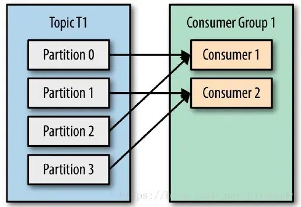
所以，分区数决定了同组消费者个数的上限。
如果你的分区数是N，那么最好线程数也保持为N，这样通常能够达到最大的吞吐量。超过N的配置只是浪费系统资源，因为多出的线程不会被分配到任何分区。
1. kafka怎么能防止重复消费？
生产端为了保证消息发送成功，可能会重复推送(直到收到成功ACK)，会产生重复消息。但是一个成熟的MQ Server框架一般会想办法解决，避免存储重复消息(比如：空间换时间，存储已处理过的message_id)，给生产端提供一个幂等性的发送消息接口。
但是消费端却无法根本解决这个问题，在高并发标准要求下，拉取消息+业务处理+提交消费位移需要做事务处理，另外消费端服务可能宕机，很可能会拉取到重复消息。
所以，只能业务端自己做控制，对于已经消费成功的消息，本地数据库表或Redis缓存业务标识，每次处理前先进行校验，保证幂等。
2. kafka消息丢失怎么办？
使用一个消息队列，其实就分为三大块：生产者、中间件、消费者，所以要保证消息就是保证三个环节都不能丢失数据。
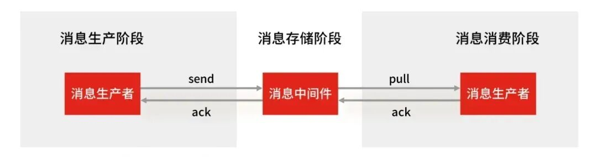
- 消息生产阶段：生产者会不会丢消息，取决于生产者对于异常情况的处理是否合理。从消息被生产出来，然后提交给 MQ 的过程中，只要能正常收到 （ MQ 中间件） 的 ack 确认响应，就表示发送成功，所以只要处理好返回值和异常，如果返回异常则进行消息重发，那么这个阶段是不会出现消息丢失的。
- 消息存储阶段：Kafka 在使用时是部署一个集群，生产者在发布消息时，队列中间件通常会写「多个节点」，也就是有多个副本，这样一来，即便其中一个节点挂了，也能保证集群的数据不丢失。
- 消息消费阶段：消费者接收消息+消息处理之后，才回复 ack 的话，那么消息阶段的消息不会丢失。不能收到消息就回 ack，否则可能消息处理中途挂掉了，消息就丢失了。
RocektMQ怎么处理分布式事务？
RocketMQ是一种最终一致性的分布式事务，就是说它保证的是消息最终一致性，而不是像2PC、3PC、TCC那样强一致分布式事务
假设 A 给 B 转 100块钱，同时它们不是同一个服务上，现在目标是就是 A 减100块钱，B 加100块钱。实际情况可能有四种：
- 1）就是A账户减100 （成功），B账户加100 （成功）
- 2）就是A账户减100（失败），B账户加100 （失败）
- 3）就是A账户减100（成功），B账户加100 （失败）
- 4）就是A账户减100 （失败），B账户加100 （成功）
这里 第1和第2 种情况是能够保证事务的一致性的，但是 第3和第4 是无法保证事务的一致性的。那我们来看下RocketMQ是如何来保证事务的一致性的。
 分布式事务的流程如上图：
分布式事务的流程如上图：
- 1、A服务先发送个Half Message（**是指暂不能被Consumer消费的消息**_。Producer 已经把消息成功发送到了Broker 端，但此消息被标记为暂不能投递状态，处于该种状态下的消息称为半消息。需要 Producer对消息的二次确认后，Consumer才能去消费它_）给Brock端，消息中携带 B服务 即将要+100元的信息。
- 2、当A服务知道Half Message发送成功后，那么开始第3步执行本地事务。
- 3、执行本地事务(会有三种情况1、执行成功。2、执行失败。3、网络等原因导致没有响应)
- 4.1)、如果本地事务成功，那么Product像Brock服务器发送Commit,这样B服务就可以消费该message。
- 4.2)、如果本地事务失败，那么Product像Brock服务器发送Rollback,那么就会直接删除上面这条半消息。
- 4.3)、如果因为网络等原因迟迟没有返回失败还是成功，那么会执行RocketMQ的回调接口，来进行事务的回查。
从上面流程可以得知 只有A服务本地事务执行成功 ，B服务才能消费该message。
那么 A账户减100 （成功），B账户加100 （失败），这时候B服务失败怎么办？
如果B最终执行失败，几乎可以断定就是代码有问题所以才引起的异常，因为消费端RocketMQ有重试机制，如果不是代码问题一般重试几次就能成功。如果是代码的原因引起多次重试失败后，也没有关系，将该异常记录下来，由人工处理，人工兜底处理后，就可以让事务达到最终的一致性。
RocketMQ消息顺序怎么保证？
消息的有序性是指消息的消费顺序能够严格保存与消息的发送顺序一致。例如，一个订单产生了3条消息，分别是订单创建、订单付款和订单完成。在消息消费时，同一条订单要严格按照这个顺序进行消费，否则业务会发生混乱。同时，不同订单之间的消息又是可以并发消费的，比如可以先执行第三个订单的付款，再执行第二个订单的创建。
RocketMQ采用了局部顺序一致性的机制，实现了单个队列中的消息严格有序。也就是说，如果想要保证顺序消费，必须将一组消息发送到同一个队列中，然后再由消费者进行注意消费。
RocketMQ推荐的顺序消费解决方案是：安装业务划分不同的队列，然后将需要顺序消费的消息发往同一队列中即可，不同业务之间的消息仍采用并发消费。这种方式在满足顺序消费的同时提高了消息的处理速度，在一定程度上避免了消息堆积问题
RocketMQ 顺序消息的原理是：
- 在 Producer（生产者） 把一批需要保证顺序的消息发送到同一个 MessageQueue
- Consumer（消费者） 则通过加锁的机制来保证消息消费的顺序性，Broker 端通过对 MessageQueue 进行加锁，保证同一个 MessageQueue 只能被同一个 Consumer 进行消费。
RocketMQ消息积压了，怎么办？
导致消息积压突然增加，最粗粒度的原因，只有两种：要么是发送变快了，要么是消费变慢了。
要解决积压的问题，可以通过扩容消费端的实例数来提升总体的消费能力。
如果短时间内没有足够的服务器资源进行扩容，没办法的办法是，将系统降级，通过关闭一些不重要的业务，减少发送方发送的数据量，最低限度让系统还能正常运转，服务一些重要业务。
说说消息队列，如果我有两个consumer在消费Kafka的同一个partition，此时我增加一个consumer，会怎么样？

同一时刻，一条消息只能被组中的一个消费者实例消费。消费者组订阅一个主题，意味着主题下的所有分区都会被组中的消费者消费到，并且主题下的每个分区只从属于组中的一个消费者，不可能出现组中的两个消费者负责同一个分区。
如果分区数大于或者等于组中的消费者实例数，那么一个消费者会负责多个分区；如果消费者实例的数量大于分区数，有一些消费者是多余的，一直接不到消息而处于空闲状态。即：
- 若consumer数量大于partition数量，会造成限制的consumer，产生浪费。
- 若consumer数量小于partition数量，会导致均衡失效，其中的某个或某些consumer会消费更多的任务。
为什么一个消费者可以消费多个分区，但是一个分区不能被多个消费者消费呢？就是要保证一个分区下的消息顺序性。
倘若，两个消费者负责同一个分区，那么就意味着两个消费者同时读取分区的消息，由于消费者自己可以控制读取消息的offset，就有可能C1才读到2，而C1读到1，C1还没处理完，C2已经读到3了，则会造成很多浪费，因为这就相当于多线程读取同一个消息，会造成消息处理的重复，且不能保证消息的顺序，这就跟主动推送（push）无异。
所以说消息积压的时候，部署多台消费者实例是不能加快消费原有分区的消息的。最多增加到和partition数量一致，超过的组员只会占用资源，而不起作用。
消息队列是参考哪种设计模式？
是参考了观察者模式和发布订阅模式，两种设计模式思路是一样的，举个生活例子：
- 观察者模式：某公司给自己员工发月饼发粽子，是由公司的行政部门发送的，这件事不适合交给第三方，原因是“公司”和“员工”是一个整体
- 发布-订阅模式：某公司要给其他人发各种快递，因为“公司”和“其他人”是独立的，其唯一的桥梁是“快递”，所以这件事适合交给第三方快递公司解决
上述过程中，如果公司自己去管理快递的配送，那公司就会变成一个快递公司，业务繁杂难以管理，影响公司自身的主营业务，因此使用何种模式需要考虑什么情况两者是需要耦合的
观察者模式
观察者模式实际上就是一个一对多的关系，在观察者模式中存在一个主题和多个观察者，主题也是被观察者，当我们主题发布消息时，会通知各个观察者，观察者将会收到最新消息，图解如下：每个观察者首先订阅主题，订阅成功后当主题发送消息时会循环整个观察者列表，逐一发送消息通知。
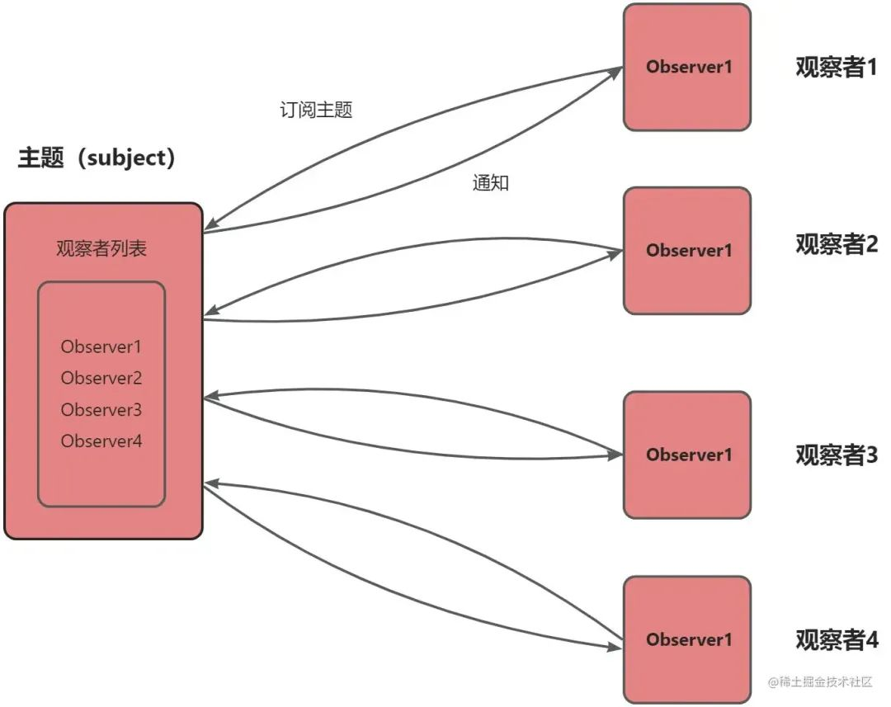
发布订阅模式
发布订阅模式和观察者模式的区别就是发布者和订阅者完全解耦，通过中间的发布订阅中心进行消息通知，发布者并不知道自己发布的消息会通知给谁，因此发布订阅模式有三个重要角色，发布者->发布订阅中心->订阅者。
图解如下：当发布者发布消息到发布订阅中心后，发布订阅中心会将消息通知给所有订阅该发布者的订阅者
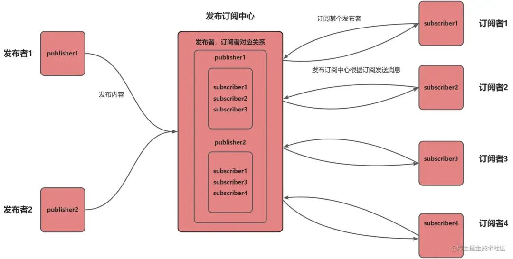
如何避免mq重复消费？
导致重复消费的原因可能出现在生产者，也可能出现在 MQ 或 消费者。
这里说的重复消费问题是指同一个数据被执行了两次，不单单指 MQ 中一条消息被消费了两次，也可能是 MQ 中存在两条一模一样的消费。
- 生产者：生产者可能会重复推送一条数据到 MQ 中，为什么会出现这种情况呢？也许是一个 Controller 接口被重复调用了 2 次，没有做接口幂等性导致的；也可能是推送消息到 MQ 时响应比较慢，生产者的重试机制导致再次推送了一次消息。
- MQ：在消费者消费完一条数据响应 ack 信号消费成功时，MQ 突然挂了，导致 MQ 以为消费者还未消费该条数据，MQ 恢复后再次推送了该条消息，导致了重复消费。
- 消费者：消费者已经消费完了一条消息，正准备但是还未给 MQ 发送 ack 信号时，此时消费者挂了，服务重启后 MQ 以为消费者还没有消费该消息，再次推送了该条消息。
消费者怎么解决重复消费问题呢？这里提供两种方法：
- 状态判断法：消费者消费数据后把消费数据记录在 redis 中，下次消费时先到 redis 中查看是否存在该消息，存在则表示消息已经消费过，直接丢弃消息。
- 业务判断法：通常数据消费后都需要插入到数据库中，使用数据库的唯一性约束防止重复消费。每次消费直接尝试插入数据，如果提示唯一性字段重复，则直接丢失消息。一般都是通过这个业务判断的方法就可以简单高效地避免消息的重复处理了。
如何避免mq重复消费？
导致重复消费的原因可能出现在生产者，也可能出现在 MQ 或 消费者。
这里说的重复消费问题是指同一个数据被执行了两次，不单单指 MQ 中一条消息被消费了两次，也可能是 MQ 中存在两条一模一样的消费。
- 生产者：生产者可能会重复推送一条数据到 MQ 中，为什么会出现这种情况呢？也许是一个 Controller 接口被重复调用了 2 次，没有做接口幂等性导致的；也可能是推送消息到 MQ 时响应比较慢，生产者的重试机制导致再次推送了一次消息。
- MQ：在消费者消费完一条数据响应 ack 信号消费成功时，MQ 突然挂了，导致 MQ 以为消费者还未消费该条数据，MQ 恢复后再次推送了该条消息，导致了重复消费。
- 消费者：消费者已经消费完了一条消息，正准备但是还未给 MQ 发送 ack 信号时，此时消费者挂了，服务重启后 MQ 以为消费者还没有消费该消息，再次推送了该条消息。
消费者怎么解决重复消费问题呢？这里提供两种方法：
- 状态判断法：消费者消费数据后把消费数据记录在 redis 中，下次消费时先到 redis 中查看是否存在该消息，存在则表示消息已经消费过，直接丢弃消息。
- 业务判断法：通常数据消费后都需要插入到数据库中，使用数据库的唯一性约束防止重复消费。每次消费直接尝试插入数据，如果提示唯一性字段重复，则直接丢失消息。一般都是通过这个业务判断的方法就可以简单高效地避免消息的重复处理了。
MQ保证消息可靠性方案是什么？
使用一个消息队列，其实就分为三大块：生产者、中间件、消费者，所以要保证消息就是保证三个环节都不能丢失数据。
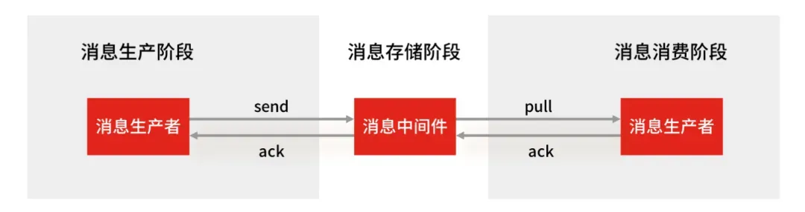
- 消息生产阶段：生产者会不会丢消息，取决于生产者对于异常情况的处理是否合理。从消息被生产出来，然后提交给 MQ 的过程中，只要能正常收到 （ MQ 中间件） 的 ack 确认响应，就表示发送成功，所以只要处理好返回值和异常，如果返回异常则进行消息重发，那么这个阶段是不会出现消息丢失的。
- 消息存储阶段：Kafka 在使用时是部署一个集群，生产者在发布消息时，队列中间件通常会写「多个节点」，也就是有多个副本，这样一来，即便其中一个节点挂了，也能保证集群的数据不丢失。
- 消息消费阶段：消费者接收消息+消息处理之后，才回复 ack 的话，那么消息阶段的消息不会丢失。不能收到消息就回 ack，否则可能消息处理中途挂掉了，消息就丢失了。
MQ的选型你是怎么做的？
Kafka、ActiveMQ、RabbitMQ、RocketMQ来进行不同维度对比。
| 特性 | ActiveMQ | RabbitMQ | RocketMQ | Kafka |
|---|---|---|---|---|
| 单机吞吐量 | 万级 | 万级 | 10 万级 | 10 万级 |
| 时效性 | 毫秒级 | 微秒级 | 毫秒级 | 毫秒级 |
| 可用性 | 高（主从） | 高（主从） | 非常高（分布式） | 非常高（分布式） |
| 消息重复 | 至少一次 | 至少一次 | 至少一次 最多一次 | 至少一次最多一次 |
| 消息顺序性 | 有序 | 有序 | 有序 | 分区有序 |
| 支持主题数 | 千级 | 百万级 | 千级 | 百级，多了性能严重下滑 |
| 消息回溯 | 不支持 | 不支持 | 支持（按时间回溯） | 支持（按offset回溯） |
| 管理界面 | 普通 | 普通 | 完善 | 普通 |
选型的时候，我们需要根据业务场景，结合上述特性来进行选型。
比如你要支持天猫双十一类超大型的秒杀活动，这种一锤子买卖，那管理界面、消息回溯啥的不重要。
我们需要看什么？看吞吐量！
所以优先选Kafka和RocketMQ这种更高吞吐的。
比如做一个公司的中台，对外提供能力，那可能会有很多主题接入，这时候主题个数又是很重要的考量，像Kafka这样百级的，就不太符合要求，可以根据情况考虑千级的RocketMQ，甚至百万级的RabbitMQ。
又比如是一个金融类业务，那么重点考虑的就是稳定性、安全性，分布式部署的Kafka和Rocket就更有优势。
特别说一下时效性，RabbitMQ以微秒的时效作为招牌，但实际上毫秒和微秒，在绝大多数情况下，都没有感知的区别，加上网络带来的波动，这一点在生产过程中，反而不会作为重要的考量。
其它的特性，如消息确认、消息回溯，也经常作为考量的场景，管理界面的话试公司而定了，反正我呆过的地方，都不看重这个，毕竟都有自己的运维体系。
为啥要用MQ延迟双删保证mysql和redis一致性？
这个是我项目用的方案，就解释了原因。
在正常的数据读取流程中，如果先查询 Redis 缓存，没有命中再去查询 MySQL 数据库，然后将查询结果写入 Redis。但如果有大量针对不存在数据的查询请求，这些请求会直接穿透 Redis 去查询 MySQL，给 MySQL 带来巨大压力。
采用 MQ 延迟双删策略，在更新 MySQL 数据时，先删除 Redis 缓存，然后通过 MQ 发送一条延迟消息，在延迟一段时间后再次删除 Redis 缓存，确保再次删除缓存后，后续的读操作能从数据库中获取到最新数据并正确更新 Redis 缓存，而且这样可以确保在数据更新期间，即使有缓存穿透的请求，也不会因为旧数据存在于 Redis 中而导致数据不一致，同时也能减轻 MySQL 的压力。
10. 谈一下你对 raft算法的理解
Raft算法由leader节点来处理一致性问题。leader节点接收来自客户端的请求日志数据，然后同步到集群中其它节点进行复制，当日志已经同步到超过半数以上节点的时候，leader节点再通知集群中其它节点哪些日志已经被复制成功，可以提交到raft状态机中执行。
通过以上方式，Raft算法将要解决的一致性问题分为了以下几个子问题。
- leader选举：集群中必须存在一个leader节点。
- 日志复制：leader节点接收来自客户端的请求然后将这些请求序列化成日志数据再同步到集群中其它节点。
- 安全性：如果某个节点已经将一条提交过的数据输入raft状态机执行了，那么其它节点不可能再将相同索引 的另一条日志数据输入到raft状态机中执行。
Raft算法需要有两个比较重要的机制：
- 角色转换与选举机制：Raft 将系统中的节点分为三种角色：领导者（Leader）、跟随者（Follower）和候选人（Candidate）。系统启动时，所有节点都是跟随者。跟随者会定期从领导者处接收心跳信息以确认领导者的存活。如果跟随者在一段时间内（选举超时时间）没有收到领导者的心跳，它会转变为候选人，发起新一轮的选举。候选人向其他节点发送请求投票消息。其他节点根据收到的请求投票消息，决定是否为该候选人投票。当候选人获得超过半数节点的投票时，它就成为新的领导者。领导者会周期性地向所有跟随者发送心跳消息，以维持自己的领导地位。每个领导者的领导周期称为一个任期（Term），任期号是单调递增的。
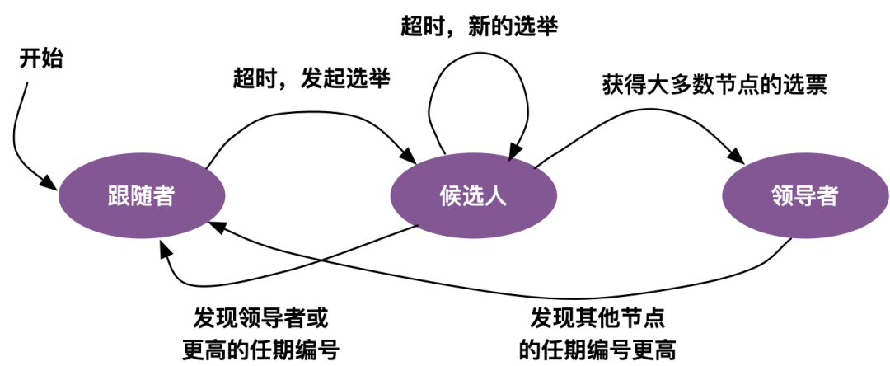
- 日志复制机制：客户端的请求会被领导者作为日志条目添加到自己的日志中。领导者将新的日志条目复制到其他跟随者节点。它会通过附加日志消息将日志条目发送给跟随者，跟随者收到消息后会将日志条目追加到自己的日志中，并向领导者发送确认消息。当领导者得知某个日志条目已经被大多数节点复制时，它会将该日志条目标记为已提交，并将其应用到状态机中。然后，领导者会通知其他节点该日志条目已提交，跟随者也会将已提交的日志条目应用到自己的状态机中。
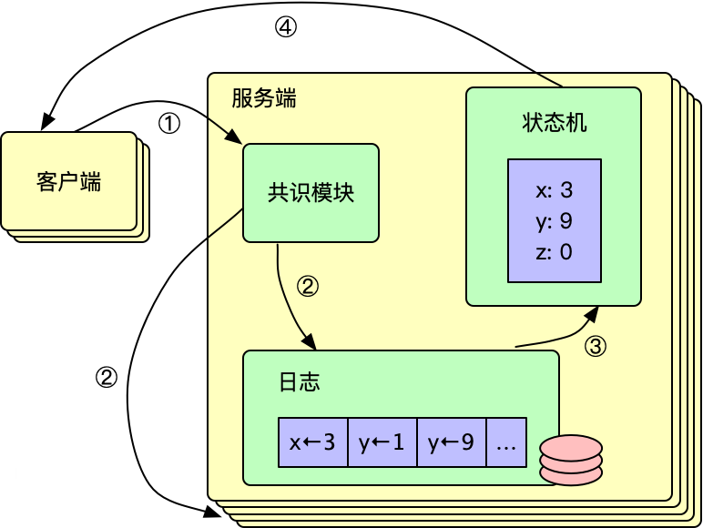
11. raft 算法的选举的流程是怎样的？
Raft 中有三种角色：Leader、Follower 和 Candidate。正常情况下，只有 Leader 处理客户端请求，Follower 被动接收日志并响应请求。当 Follower 在一定时间内没有收到 Leader 的心跳（即超时），就会转为 Candidate，开始发起选举。
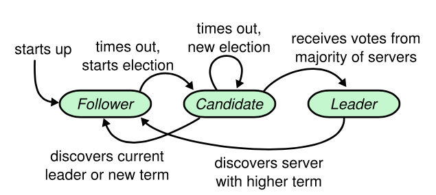
接下来，选举流程的步骤大致如下：
- 转为 Candidate 状态：Follower 超时后，增加自己的任期号（Term），并转换为 Candidate，开始竞选。
- 发送 RequestVote 请求：Candidate 首先给自己投一票，然后 Candidate 向所有其他节点发送请求投票的 RPC。
- 处理投票请求：其他节点（Follower 或 Candidate）在收到请求后，会检查是否已经投过票给当前任期的某个 Candidate。如果没有投票，并且 Candidate 的日志至少和自己一样新，就会投票给该 Candidate。
- 赢得选举：Candidate 需要获得超过半数节点的投票才能成为新的 Leader。如果赢得选举，Candidate 就会转为 Leader，并开始发送心跳来维持自己的领导地位。
- 选举冲突：如果多个 Candidate 同时竞选，可能导致没有任何一个获得多数票，这时会触发新的选举，每个 Candidate 随机延长超时时间，以减少冲突的可能性。
9. 为什么要用RabbitMq？
RabbitMq消息队列的三大用途：
- 解耦：可以在多个系统之间进行解耦，将原本通过网络之间的调用的方式改为使用MQ进行消息的异步通讯，只要该操作不是需要同步的，就可以改为使用MQ进行不同系统之间的联系，这样项目之间不会存在耦合，系统之间不会产生太大的影响，就算一个系统挂了，也只是消息挤压在MQ里面没人进行消费而已，不会对其他的系统产生影响。
- 异步：加入一个操作设计到好几个步骤，这些步骤之间不需要同步完成，比如客户去创建了一个订单，还要去客户轨迹系统添加一条轨迹、去库存系统更新库存、去客户系统修改客户的状态等等。这样如果这个系统都直接进行调用，那么将会产生大量的时间，这样对于客户是无法接收的；并且像添加客户轨迹这种操作是不需要去同步操作的，如果使用MQ将客户创建订单时，将后面的轨迹、库存、状态等信息的更新全都放到MQ里面然后去异步操作，这样就可加快系统的访问速度，提供更好的客户体验。
- 削峰：一个系统访问流量有高峰时期，也有低峰时期，比如说，中午整点有一个抢购活动等等。比如系统平时流量并不高，一秒钟只有100多个并发请求，系统处理没有任何压力，一切风平浪静，到了某个抢购活动时间，系统并发访问了剧增，比如达到了每秒5000个并发请求，而我们的系统每秒只能处理2000个请求，那么由于流量太大，我们的系统、数据库可能就会崩溃。这时如果使用MQ进行流量削峰，将用户的大量消息直接放到MQ里面，然后我们的系统去按自己的最大消费能力去消费这些消息，就可以保证系统的稳定，只是可能要跟进业务逻辑，给用户返回特定页面或者稍后通过其他方式通知其结果
用的什么消息队列，消息队列怎么选型的？
项目用的是 RocketMQ 消息队列。选择RocketMQ的原因是：
- 开发语言优势。RocketMQ 使用 Java 语言开发，比起使用 Erlang 开发的 RabbitMQ 来说，有着更容易上手的阅读体验和受众。在遇到 RocketMQ 较为底层的问题时，大部分熟悉 Java 的同学都可以深入阅读其源码，分析、排查问题。
- 社区氛围活跃。RocketMQ 是阿里巴巴开源且内部在大量使用的消息队列，说明 RocketMQ 是的确经得起残酷的生产环境考验的，并且能够针对线上环境复杂的需求场景提供相应的解决方案。
-
特性丰富。根据 RocketMQ 官方文档的列举，其高级特性达到了
12 种，例如顺序消息、事务消息、消息过滤、定时消息等。顺序消息、事务消息、消息过滤、定时消息。RocketMQ 丰富的特性，能够为我们在复杂的业务场景下尽可能多地提供思路及解决方案。
有没有消息积压的问题
导致消息积压突然增加，最粗粒度的原因，只有两种：要么是发送变快了，要么是消费变慢了。
要解决积压的问题，可以通过扩容消费端的实例数来提升总体的消费能力。
如果短时间内没有足够的服务器资源进行扩容，没办法的办法是，将系统降级，通过关闭一些不重要的业务，减少发送方发送的数据量，最低限度让系统还能正常运转，服务一些重要业务。
RocketMQ 消息可靠性怎么保证？
使用一个消息队列，其实就分为三大块：生产者、中间件、消费者，所以要保证消息就是保证三个环节都不能丢失数据。
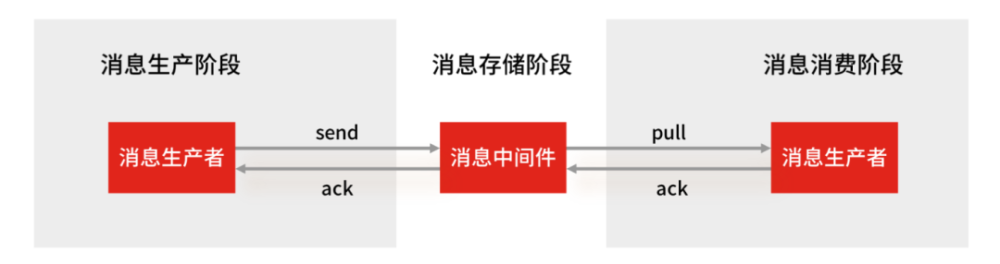
- 消息生产阶段：生产者会不会丢消息，取决于生产者对于异常情况的处理是否合理。从消息被生产出来，然后提交给 MQ 的过程中，只要能正常收到 （ MQ 中间件） 的 ack 确认响应，就表示发送成功，所以只要处理好返回值和异常，如果返回异常则进行消息重发，那么这个阶段是不会出现消息丢失的。
- 消息存储阶段：RabbitMQ 或 Kafka 这类专业的队列中间件，在使用时是部署一个集群，生产者在发布消息时，队列中间件通常会写「多个节点」，也就是有多个副本，这样一来，即便其中一个节点挂了，也能保证集群的数据不丢失。
- 消息消费阶段：消费者接收消息+消息处理之后，才回复 ack 的话，那么消息阶段的消息不会丢失。不能收到消息就回 ack，否则可能消息处理中途挂掉了，消息就丢失了。
Kafka 和 RocketMQ 消息确认机制有什么不同？
Kafka的消息确认机制有三种：0，1，-1：
- ACK=0：这是最不可靠的模式。生产者在发送消息后不会等待来自服务器的确认。这意味着消息可能会在发送之后丢失，而生产者将无法知道它是否成功到达服务器。
- ACK=1：这是默认模式，也是一种折衷方式。在这种模式下，生产者会在消息发送后等待来自分区领导者（leader）的确认，但不会等待所有副本（replicas）的确认。这意味着只要消息被写入分区领导者，生产者就会收到确认。如果分区领导者成功写入消息，但在同步到所有副本之前宕机，消息可能会丢失。
- ACK=-1：这是最可靠的模式。在这种模式下，生产者会在消息发送后等待所有副本的确认。只有在所有副本都成功写入消息后，生产者才会收到确认。这确保了消息的可靠性，但会导致更长的延迟。
RocketMQ 提供了三种消息发送方式：同步发送、异步发送和单向发送：
- 同步发送：是指消息发送方发出一条消息后，会在收到服务端同步响应之后才发下一条消息的通讯方式。应用场景非常广泛，例如重要通知邮件、报名短信通知、营销短信系统等。
- 异步发送：是指发送方发出一条消息后，不等服务端返回响应，接着发送下一条消息的通讯方式，但是需要实现异步发送回调接口（SendCallback）。消息发送方在发送了一条消息后，不需要等待服务端响应即可发送第二条消息。发送方通过回调接口接收服务端响应，并处理响应结果。适用于链路耗时较长，对响应时间较为敏感的业务场景，例如，视频上传后通知启动转码服务，转码完成后通知推送转码结果等。
- 单向发送：发送方只负责发送消息，不等待服务端返回响应且没有回调函数触发，即只发送请求不等待应答。此方式发送消息的过程耗时非常短，一般在微秒级别。适用于某些耗时非常短，但对可靠性要求并不高的场景，例如日志收集。
Kafka 和 RocketMQ 的 broker 架构有什么区别
- Kafka 的 broker 架构：Kafka 的 broker 架构采用了分布式的设计，每个 Kafka broker 是一个独立的服务实例，负责存储和处理一部分消息数据。Kafka 的 topic 被分区存储在不同的 broker 上，实现了水平扩展和高可用性。
- RocketMQ 的 broker 架构：RocketMQ 的 broker 架构也是分布式的，但是每个 RocketMQ broker 有主从之分，一个主节点和多个从节点组成一个 broker 集群。主节点负责消息的写入和消费者的拉取，从节点负责消息的复制和消费者的负载均衡，提高了消息的可靠性和可用性。
RocektMQ怎么处理分布式事务？
RocketMQ是一种最终一致性的分布式事务，就是说它保证的是消息最终一致性，而不是像2PC、3PC、TCC那样强一致分布式事务
假设 A 给 B 转 100块钱，同时它们不是同一个服务上，现在目标是就是 A 减100块钱，B 加100块钱。实际情况可能有四种：
- 1）就是A账户减100 （成功），B账户加100 （成功）
- 2）就是A账户减100（失败），B账户加100 （失败）
- 3）就是A账户减100（成功），B账户加100 （失败）
- 4）就是A账户减100 （失败），B账户加100 （成功）
这里 第1和第2 种情况是能够保证事务的一致性的，但是 第3和第4 是无法保证事务的一致性的。那我们来看下RocketMQ是如何来保证事务的一致性的。
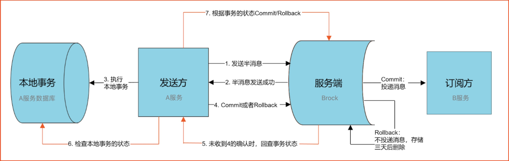
分布式事务的流程如上图：- 1、A服务先发送个Half Message（是指暂不能被Consumer消费的消息。Producer 已经把消息成功发送到了Broker 端，但此消息被标记为暂不能投递状态，处于该种状态下的消息称为半消息。需要 Producer对消息的二次确认后，Consumer才能去消费它_）给Brock端，消息中携带 B服务 即将要+100元的信息。
- 2、当A服务知道Half Message发送成功后，那么开始第3步执行本地事务。
- 3、执行本地事务(会有三种情况1、执行成功。2、执行失败。3、网络等原因导致没有响应)
- 4.1)、如果本地事务成功，那么Product像Brock服务器发送Commit,这样B服务就可以消费该message。
- 4.2)、如果本地事务失败，那么Product像Brock服务器发送Rollback,那么就会直接删除上面这条半消息。
- 4.3)、如果因为网络等原因迟迟没有返回失败还是成功，那么会执行RocketMQ的回调接口，来进行事务的回查。
从上面流程可以得知 只有A服务本地事务执行成功 ，B服务才能消费该message。
那么 A账户减100 （成功），B账户加100 （失败），这时候B服务失败怎么办？
如果B最终执行失败，几乎可以断定就是代码有问题所以才引起的异常，因为消费端RocketMQ有重试机制，如果不是代码问题一般重试几次就能成功。
如果是代码的原因引起多次重试失败后，也没有关系，将该异常记录下来，由人工处理，人工兜底处理后，就可以让事务达到最终的一致性。
RocketMQ消息顺序怎么保证？
消息的有序性是指消息的消费顺序能够严格保存与消息的发送顺序一致。例如，一个订单产生了3条消息，分别是订单创建、订单付款和订单完成。在消息消费时，同一条订单要严格按照这个顺序进行消费，否则业务会发生混乱。同时，不同订单之间的消息又是可以并发消费的，比如可以先执行第三个订单的付款，再执行第二个订单的创建。
RocketMQ采用了局部顺序一致性的机制，实现了单个队列中的消息严格有序。也就是说，如果想要保证顺序消费，必须将一组消息发送到同一个队列中，然后再由消费者进行注意消费。
RocketMQ推荐的顺序消费解决方案是：安装业务划分不同的队列，然后将需要顺序消费的消息发往同一队列中即可，不同业务之间的消息仍采用并发消费。这种方式在满足顺序消费的同时提高了消息的处理速度，在一定程度上避免了消息堆积问题
RocketMQ 顺序消息的原理是：
- 在 Producer（生产者） 把一批需要保证顺序的消息发送到同一个 MessageQueue
- Consumer（消费者） 则通过加锁的机制来保证消息消费的顺序性，Broker 端通过对 MessageQueue 进行加锁，保证同一个 MessageQueue 只能被同一个 Consumer 进行消费。
RocketMQ消息积压了，怎么办？
导致消息积压突然增加，最粗粒度的原因，只有两种：要么是发送变快了，要么是消费变慢了。
要解决积压的问题，可以通过扩容消费端的实例数来提升总体的消费能力。
如果短时间内没有足够的服务器资源进行扩容，没办法的办法是，将系统降级，通过关闭一些不重要的业务，减少发送方发送的数据量，最低限度让系统还能正常运转，服务一些重要业务。
RabbitMQ
为什么不用别的消息队列
因为我们的项目比较轻量级，所以在选择消息队列的时候，首先考虑的是简单、易上手，所以选择了RabbitMQ。
而且 RabbitMQ 支持多种客户端，如Python、Java、.NET、C、Ruby等，在易用性、扩展性、高可用性等方面表现都不错，并且可以与SpringAMQP完美整合，API丰富易用。
重复消费怎么解决？
生产端为了保证消息发送成功，可能会重复推送(直到收到成功ACK)，会产生重复消息。但是一个成熟的MQ Server框架一般会想办法解决，避免存储重复消息(比如：空间换时间，存储已处理过的message_id)，给生产端提供一个幂等性的发送消息接口。
但是消费端却无法根本解决这个问题，在高并发标准要求下，拉取消息+业务处理+提交消费位移需要做事务处理，另外消费端服务可能宕机，很可能会拉取到重复消息。
所以，只能业务端自己做控制，对于已经消费成功的消息，本地数据库表或Redis缓存业务标识，每次处理前先进行校验，保证幂等。
消息丢失怎么解决的？
使用一个消息队列，其实就分为三大块：生产者、中间件、消费者，所以要保证消息就是保证三个环节都不能丢失数据。
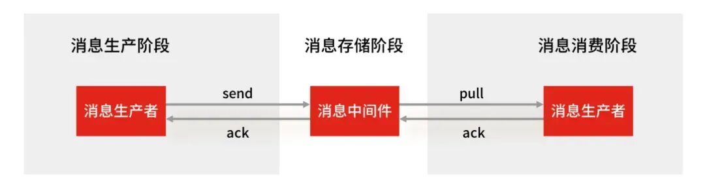
- 消息生产阶段：生产者会不会丢消息，取决于生产者对于异常情况的处理是否合理。从消息被生产出来，然后提交给 MQ 的过程中，只要能正常收到 （ MQ 中间件） 的 ack 确认响应，就表示发送成功，所以只要处理好返回值和异常，如果返回异常则进行消息重发，那么这个阶段是不会出现消息丢失的。
- 消息存储阶段：Kafka 在使用时是部署一个集群，生产者在发布消息时，队列中间件通常会写「多个节点」，也就是有多个副本，这样一来，即便其中一个节点挂了，也能保证集群的数据不丢失。
- 消息消费阶段：消费者接收消息+消息处理之后，才回复 ack 的话，那么消息阶段的消息不会丢失。不能收到消息就回 ack，否则可能消息处理中途挂掉了，消息就丢失了。
常用的消息队列是哪个？
项目里主要用了了RabbitMQ
总结一下什么场景下会使用到消息队列？有什么好处？
- 解耦：可以在多个系统之间进行解耦，将原本通过网络之间的调用的方式改为使用MQ进行消息的异步通讯，只要该操作不是需要同步的，就可以改为使用MQ进行不同系统之间的联系，这样项目之间不会存在耦合，系统之间不会产生太大的影响，就算一个系统挂了，也只是消息挤压在MQ里面没人进行消费而已，不会对其他的系统产生影响。
- 异步：加入一个操作设计到好几个步骤，这些步骤之间不需要同步完成，比如客户去创建了一个订单，还要去客户轨迹系统添加一条轨迹、去库存系统更新库存、去客户系统修改客户的状态等等。这样如果这个系统都直接进行调用，那么将会产生大量的时间，这样对于客户是无法接收的；并且像添加客户轨迹这种操作是不需要去同步操作的，如果使用MQ将客户创建订单时，将后面的轨迹、库存、状态等信息的更新全都放到MQ里面然后去异步操作，这样就可加快系统的访问速度，提供更好的客户体验。
- 削峰：一个系统访问流量有高峰时期，也有低峰时期，比如说，中午整点有一个抢购活动等等。比如系统平时流量并不高，一秒钟只有100多个并发请求，系统处理没有任何压力，一切风平浪静，到了某个抢购活动时间，系统并发访问了剧增，比如达到了每秒5000个并发请求，而我们的系统每秒只能处理2000个请求，那么由于流量太大，我们的系统、数据库可能就会崩溃。这时如果使用MQ进行流量削峰，将用户的大量消息直接放到MQ里面，然后我们的系统去按自己的最大消费能力去消费这些消息，就可以保证系统的稳定，只是可能要跟进业务逻辑，给用户返回特定页面或者稍后通过其他方式通知其结果
RabbitMQ的底层架构是什么？
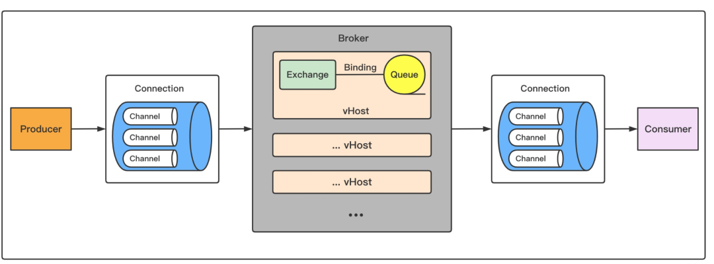
以下是 RabbitMQ 的一些核心架构组件和特性：
- 核心组件：生产者负责发送消息到 RabbitMQ、消费者负责从 RabbitMQ 接收并处理消息、RabbitMQ 本身负责存储和转发消息。
- 交换机：交换机接收来自生产者的消息，并根据 routing key 和绑定规则将消息路由到一个或多个队列。
- 持久化：RabbitMQ 支持消息的持久化，可以将消息保存在磁盘上，以确保在 RabbitMQ 重启后消息不丢失，队列也可以设置为持久化，以保证其结构在重启后不会丢失。
- 确认机制：为了确保消息可靠送达，RabbitMQ 使用确认机制，费者在处理完消息后发送确认给 RabbitMQ，未确认的消息会重新入队。
- 高可用性：RabbitMQ 提供了集群模式，可以将多个 RabbitMQ 实例组成一个集群，以提高可用性和负载均衡。通过镜像队列，可以在多个节点上复制同一队列的内容，以防止单点故障。
是否了解消息队列呢？
了解过，常见的消息队列有RabbitMQ、Kafka、RocketMQ。消息队列三大作用：
- 解耦：可以在多个系统之间进行解耦，将原本通过网络之间的调用的方式改为使用MQ进行消息的异步通讯，只要该操作不是需要同步的，就可以改为使用MQ进行不同系统之间的联系，这样项目之间不会存在耦合，系统之间不会产生太大的影响，就算一个系统挂了，也只是消息挤压在MQ里面没人进行消费而已，不会对其他的系统产生影响。
- 异步：加入一个操作设计到好几个步骤，这些步骤之间不需要同步完成，比如客户去创建了一个订单，还要去客户轨迹系统添加一条轨迹、去库存系统更新库存、去客户系统修改客户的状态等等。这样如果这个系统都直接进行调用，那么将会产生大量的时间，这样对于客户是无法接收的；并且像添加客户轨迹这种操作是不需要去同步操作的，如果使用MQ将客户创建订单时，将后面的轨迹、库存、状态等信息的更新全都放到MQ里面然后去异步操作，这样就可加快系统的访问速度，提供更好的客户体验。
- 削峰：一个系统访问流量有高峰时期，也有低峰时期，比如说，中午整点有一个抢购活动等等。比如系统平时流量并不高，一秒钟只有100多个并发请求，系统处理没有任何压力，一切风平浪静，到了某个抢购活动时间，系统并发访问了剧增，比如达到了每秒5000个并发请求，而我们的系统每秒只能处理2000个请求，那么由于流量太大，我们的系统、数据库可能就会崩溃。这时如果使用MQ进行流量削峰，将用户的大量消息直接放到MQ里面，然后我们的系统去按自己的最大消费能力去消费这些消息，就可以保证系统的稳定，只是可能要跟进业务逻辑，给用户返回特定页面或者稍后通过其他方式通知其结果。
7. MQ如何保证不重复消费？
MQ 保证不重复消费的核心是实现幂等性消费，即确保同一条消息被多次消费时，结果与消费一次完全一致。主要通过以下机制实现：
-
首先是生产端去重，通过消息唯一标识（如业务 ID + 时间戳），结合 MQ 的消息去重机制（如 Kafka 的 Producer ID + 序列号，RabbitMQ 的消息 ID），避免重复发送。
-
消费端是关键，需为每条消息生成唯一 ID（如消息 ID 或业务唯一键），消费前先查询存储系统（如 Redis、数据库）判断是否已处理：若未处理，执行业务逻辑并记录 ID；若已处理，直接返回成功。
此外，MQ 自身可通过确认机制（如 RabbitMQ 的 ACK、Kafka 的 offset 提交）确保消息被正确处理后再标记为已消费，避免因消费端异常导致的重复投递。结合业务场景设计幂等逻辑（如数据库唯一约束、乐观锁），可彻底解决重复消费问题。
8. MQ的ACK确认机制工作原理是什么？
MQ 的 ACK制是保障消息可靠传递的核心机制，其核心原理是：消费端处理完消息后，向 MQ 服务器发送 “确认信号”，MQ 收到信号后才将消息标记为 “已消费” 并移除，否则会重新投递消息，避免因消费端异常（如崩溃、网络中断）导致消息丢失。
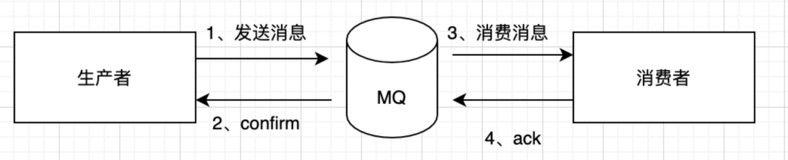
不同 MQ 的 ACK 机制实现细节略有差异，但核心逻辑一致：
- 消息投递与暂存：MQ 服务器将消息投递给消费端后，不会立即删除消息，而是暂存在队列中（标记为 “未确认” 状态），等待消费端的 ACK 信号。此时消息仍会被监控，若长时间未收到 ACK，会触发重试逻辑。
- 消费端处理与确认：消费端接收到消息后，根据配置的 ACK 模式（自动 / 手动）处理：
- 自动 ACK：消费端接收到消息即自动发送 ACK（如 RabbitMQ 的 autoAck=true），适用于无需复杂处理的场景，但可能因 “未实际处理完成就确认” 导致消息丢失。
- 手动 ACK：消费端处理完业务逻辑（如数据库操作成功、缓存更新完成）后，主动调用 API 发送 ACK（如 RabbitMQ 的 channel.basicAck ()、Kafka 的 commitSync ()），确保业务处理成功后再确认，更安全但需手动控制。
- 未确认消息的重试：若消费端未发送 ACK（如崩溃、网络中断），MQ 服务器会在超时后将消息重新放入队列，再次投递给其他消费端（或原消费端恢复后），直到收到 ACK 或达到最大重试次数（可配置，超过后可能进入死信队列）。
以 RabbitMQ 为例，其 ACK 机制通过 channel传递：消费端注册消费者时指定 autoAck 参数，手动模式下需调用 basicAck，其中 deliveryTag 是消息唯一标识，multiple 表示是否确认该标识之前的所有消息；若处理失败，可调用 basicNack () 拒绝并指定是否重新投递。
Kafka 则通过 offset 实现类似逻辑：消费端处理完消息后提交 offset，MQ 记录最新 offset，下次从该位置开始消费；若未提交，重启后会从上次提交的 offset 重新消费，本质是通过 offset 提交实现 “确认已消费” 的标记。